pre code {
white-space:
}library(knitr)#Windows
setwd("C:/Users/rowe0122/Dropbox/R backup/Lockout - R/LOCKOUT")
#Mac
#setwd("~/Dropbox/R backup/Lockout - R/LOCKOUT")
load(file="lockcowdat.Rdata")
load(file="lockcowdhidat.Rdata")library(dplyr)##
## Attaching package: 'dplyr'## The following objects are masked from 'package:stats':
##
## filter, lag## The following objects are masked from 'package:base':
##
## intersect, setdiff, setequal, unionlockcow = lockcow %>%
mutate(Tx = recode(lockcow$Tx,
"0" = "Orbeseal", "1" = "Lockout"))
lockcowdhi = lockcowdhi %>%
mutate(Tx = recode(lockcowdhi$Tx,
"0" = "Orbeseal", "1" = "Lockout"))Desc1 <- lockcow %>% select(Cow,FARMID,Tx,Age,Parity,SCCDO,MYDO,DIMDO,CM1,PeakSCC,DPlength,CM2,Rem2)
head(Desc1, n=10)
#summarytools::dfSummary(Baseline, style='grid')
print(summarytools::dfSummary(Desc1,valid.col=FALSE, graph.magnif=0.8, style="grid"))## Data Frame Summary
##
## Dimensions: 834 x 13
## Duplicates: 0
##
## +----+-----------+--------------------------+---------------------+------------------------------------+---------+
## | No | Variable | Stats / Values | Freqs (% of Valid) | Graph | Missing |
## +====+===========+==========================+=====================+====================================+=========+
## | 1 | Cow | Mean (sd) : 9.4 (1.3) | 827 distinct values | . . : | 0 |
## | | [numeric] | min < med < max: | | : : : : | (0%) |
## | | | 6.3 < 10.1 < 11.2 | | : : : : | |
## | | | IQR (CV) : 2.1 (0.1) | | . : : : : : | |
## | | | | | . . : : : : : : : | |
## +----+-----------+--------------------------+---------------------+------------------------------------+---------+
## | 2 | FARMID | Mean (sd) : 3 (1.3) | 1 : 183 (21.9%) | IIII | 0 |
## | | [numeric] | min < med < max: | 2 : 80 ( 9.6%) | I | (0%) |
## | | | 1 < 3 < 5 | 3 : 289 (34.6%) | IIIIII | |
## | | | IQR (CV) : 2 (0.5) | 4 : 149 (17.9%) | III | |
## | | | | 5 : 133 (16.0%) | III | |
## +----+-----------+--------------------------+---------------------+------------------------------------+---------+
## | 3 | Tx | 1. Orbeseal | 415 (49.8%) | IIIIIIIII | 0 |
## | | [factor] | 2. Lockout | 419 (50.2%) | IIIIIIIIII | (0%) |
## +----+-----------+--------------------------+---------------------+------------------------------------+---------+
## | 4 | Age | Mean (sd) : 46.1 (15.5) | 572 distinct values | : | 0 |
## | | [numeric] | min < med < max: | | : | (0%) |
## | | | 17 < 44 < 117 | | : . | |
## | | | IQR (CV) : 23.1 (0.3) | | : : : . | |
## | | | | | : : : : : . | |
## +----+-----------+--------------------------+---------------------+------------------------------------+---------+
## | 5 | Parity | 1. 1 | 353 (42.3%) | IIIIIIII | 0 |
## | | [factor] | 2. 2 | 244 (29.3%) | IIIII | (0%) |
## | | | 3. 3 | 151 (18.1%) | III | |
## | | | 4. 4 | 86 (10.3%) | II | |
## +----+-----------+--------------------------+---------------------+------------------------------------+---------+
## | 6 | SCCDO | Mean (sd) : 4.6 (1.2) | 332 distinct values | : | 0 |
## | | [numeric] | min < med < max: | | . : . | (0%) |
## | | | 0 < 4.6 < 8.9 | | : : : | |
## | | | IQR (CV) : 1.5 (0.3) | | : : : | |
## | | | | | . : : : : . | |
## +----+-----------+--------------------------+---------------------+------------------------------------+---------+
## | 7 | MYDO | Mean (sd) : 25.4 (9) | 92 distinct values | : | 0 |
## | | [numeric] | min < med < max: | | : : : | (0%) |
## | | | 1.8 < 25.6 < 49 | | : : : : : . | |
## | | | IQR (CV) : 13.6 (0.4) | | : : : : : : | |
## | | | | | . : : : : : : : : . | |
## +----+-----------+--------------------------+---------------------+------------------------------------+---------+
## | 8 | DIMDO | Mean (sd) : 330.2 (67) | 196 distinct values | : | 0 |
## | | [numeric] | min < med < max: | | : | (0%) |
## | | | 256 < 307 < 869 | | : . | |
## | | | IQR (CV) : 62 (0.2) | | : : | |
## | | | | | : : : . | |
## +----+-----------+--------------------------+---------------------+------------------------------------+---------+
## | 9 | CM1 | 1. 0 | 620 (74.3%) | IIIIIIIIIIIIII | 0 |
## | | [factor] | 2. 1 | 214 (25.7%) | IIIII | (0%) |
## +----+-----------+--------------------------+---------------------+------------------------------------+---------+
## | 10 | PeakSCC | Mean (sd) : 5.8 (1.3) | 545 distinct values | : | 0 |
## | | [numeric] | min < med < max: | | : . | (0%) |
## | | | 3 < 5.6 < 9.2 | | : : : : | |
## | | | IQR (CV) : 1.7 (0.2) | | : : : : : : . | |
## | | | | | . : : : : : : : : . | |
## +----+-----------+--------------------------+---------------------+------------------------------------+---------+
## | 11 | DPlength | Mean (sd) : 54.9 (8.7) | 50 distinct values | : : | 0 |
## | | [numeric] | min < med < max: | | : : : | (0%) |
## | | | 30 < 55 < 85 | | . : : : . | |
## | | | IQR (CV) : 13 (0.2) | | : : : : : | |
## | | | | | . : : : : : : : | |
## +----+-----------+--------------------------+---------------------+------------------------------------+---------+
## | 12 | CM2 | Min : 0 | 0 : 676 (81.1%) | IIIIIIIIIIIIIIII | 0 |
## | | [numeric] | Mean : 0.2 | 1 : 158 (18.9%) | III | (0%) |
## | | | Max : 1 | | | |
## +----+-----------+--------------------------+---------------------+------------------------------------+---------+
## | 13 | Rem2 | Min : 0 | 0 : 746 (89.5%) | IIIIIIIIIIIIIIIII | 0 |
## | | [numeric] | Mean : 0.1 | 1 : 88 (10.5%) | II | (0%) |
## | | | Max : 1 | | | |
## +----+-----------+--------------------------+---------------------+------------------------------------+---------+
table1::table1(~ factor(FARMID) + Age + Parity + SCCDO + PeakSCC + MYDO + as.numeric(DIMDO) + CM1 + as.numeric(DPlength) + as.factor(CM2) + as.factor(Rem2) | Tx, data=lockcow,topclass="Rtable1-grid")| Orbeseal (n=415) |
Lockout (n=419) |
Overall (n=834) |
|
|---|---|---|---|
| factor(FARMID) | |||
| 1 | 91 (21.9%) | 92 (22.0%) | 183 (21.9%) |
| 2 | 39 (9.4%) | 41 (9.8%) | 80 (9.6%) |
| 3 | 143 (34.5%) | 146 (34.8%) | 289 (34.7%) |
| 4 | 75 (18.1%) | 74 (17.7%) | 149 (17.9%) |
| 5 | 67 (16.1%) | 66 (15.8%) | 133 (15.9%) |
| Age | |||
| Mean (SD) | 46.9 (16.3) | 45.3 (14.7) | 46.1 (15.5) |
| Median [Min, Max] | 44.2 [18.0, 117] | 43.9 [17.0, 113] | 44.0 [17.0, 117] |
| Parity | |||
| 1 | 172 (41.4%) | 181 (43.2%) | 353 (42.3%) |
| 2 | 119 (28.7%) | 125 (29.8%) | 244 (29.3%) |
| 3 | 74 (17.8%) | 77 (18.4%) | 151 (18.1%) |
| 4 | 50 (12.0%) | 36 (8.6%) | 86 (10.3%) |
| SCCDO | |||
| Mean (SD) | 4.54 (1.22) | 4.57 (1.22) | 4.55 (1.22) |
| Median [Min, Max] | 4.60 [0.00, 8.92] | 4.53 [0.00, 8.85] | 4.56 [0.00, 8.92] |
| PeakSCC | |||
| Mean (SD) | 5.71 (1.18) | 5.82 (1.33) | 5.77 (1.26) |
| Median [Min, Max] | 5.56 [3.00, 9.21] | 5.59 [3.09, 9.21] | 5.58 [3.00, 9.21] |
| MYDO | |||
| Mean (SD) | 25.3 (8.84) | 25.4 (9.12) | 25.4 (8.97) |
| Median [Min, Max] | 26.3 [2.72, 48.5] | 25.4 [1.81, 49.0] | 25.6 [1.81, 49.0] |
| as.numeric(DIMDO) | |||
| Mean (SD) | 330 (63.2) | 330 (70.6) | 330 (67.0) |
| Median [Min, Max] | 307 [256, 817] | 306 [260, 869] | 307 [256, 869] |
| CM1 | |||
| 0 | 305 (73.5%) | 315 (75.2%) | 620 (74.3%) |
| 1 | 110 (26.5%) | 104 (24.8%) | 214 (25.7%) |
| as.numeric(DPlength) | |||
| Mean (SD) | 54.8 (8.82) | 55.0 (8.63) | 54.9 (8.72) |
| Median [Min, Max] | 55.0 [30.0, 84.0] | 55.0 [30.0, 85.0] | 55.0 [30.0, 85.0] |
| as.factor(CM2) | |||
| 0 | 336 (81.0%) | 340 (81.1%) | 676 (81.1%) |
| 1 | 79 (19.0%) | 79 (18.9%) | 158 (18.9%) |
| as.factor(Rem2) | |||
| 0 | 370 (89.2%) | 376 (89.7%) | 746 (89.4%) |
| 1 | 45 (10.8%) | 43 (10.3%) | 88 (10.6%) |
table1::table1(~ Age + Parity + SCCDO + PeakSCC + MYDO + as.numeric(DIMDO) + CM1 + as.numeric(DPlength) + as.factor(CM2) + as.factor(Rem2) | factor(FARMID), data=lockcow,topclass="Rtable1-grid")| 1 (n=183) |
2 (n=80) |
3 (n=289) |
4 (n=149) |
5 (n=133) |
Overall (n=834) |
|
|---|---|---|---|---|---|---|
| Age | ||||||
| Mean (SD) | 43.3 (13.3) | 41.1 (10.4) | 46.8 (14.6) | 49.9 (17.7) | 47.3 (18.6) | 46.1 (15.5) |
| Median [Min, Max] | 42.3 [28.6, 90.4] | 36.6 [29.6, 71.1] | 44.7 [30.1, 103] | 46.3 [17.4, 113] | 44.6 [17.0, 117] | 44.0 [17.0, 117] |
| Parity | ||||||
| 1 | 82 (44.8%) | 43 (53.8%) | 115 (39.8%) | 59 (39.6%) | 54 (40.6%) | 353 (42.3%) |
| 2 | 67 (36.6%) | 23 (28.8%) | 78 (27.0%) | 38 (25.5%) | 38 (28.6%) | 244 (29.3%) |
| 3 | 20 (10.9%) | 13 (16.2%) | 72 (24.9%) | 28 (18.8%) | 18 (13.5%) | 151 (18.1%) |
| 4 | 14 (7.7%) | 1 (1.2%) | 24 (8.3%) | 24 (16.1%) | 23 (17.3%) | 86 (10.3%) |
| SCCDO | ||||||
| Mean (SD) | 4.21 (1.33) | 4.44 (1.18) | 4.62 (1.02) | 4.53 (1.25) | 4.98 (1.31) | 4.55 (1.22) |
| Median [Min, Max] | 4.20 [0.00, 7.88] | 4.41 [2.64, 7.38] | 4.57 [2.56, 8.92] | 4.63 [0.00, 8.63] | 4.91 [0.00, 8.85] | 4.56 [0.00, 8.92] |
| PeakSCC | ||||||
| Mean (SD) | 5.65 (1.17) | 5.18 (1.11) | 5.74 (1.35) | 5.90 (1.15) | 6.18 (1.23) | 5.77 (1.26) |
| Median [Min, Max] | 5.57 [3.47, 8.78] | 5.03 [3.18, 7.79] | 5.44 [3.00, 9.21] | 5.78 [3.40, 8.95] | 6.12 [3.09, 9.21] | 5.58 [3.00, 9.21] |
| MYDO | ||||||
| Mean (SD) | 15.5 (5.37) | 26.4 (4.88) | 30.3 (7.85) | 29.3 (7.51) | 23.0 (6.70) | 25.4 (8.97) |
| Median [Min, Max] | 15.9 [2.72, 30.8] | 26.8 [13.6, 36.3] | 31.8 [13.2, 48.5] | 29.9 [13.6, 49.0] | 23.6 [1.81, 47.2] | 25.6 [1.81, 49.0] |
| as.numeric(DIMDO) | ||||||
| Mean (SD) | 337 (99.6) | 317 (41.8) | 332 (62.5) | 329 (48.5) | 327 (46.9) | 330 (67.0) |
| Median [Min, Max] | 307 [258, 869] | 302 [272, 466] | 312 [256, 817] | 296 [290, 469] | 305 [264, 491] | 307 [256, 869] |
| CM1 | ||||||
| 0 | 153 (83.6%) | 70 (87.5%) | 177 (61.2%) | 122 (81.9%) | 98 (73.7%) | 620 (74.3%) |
| 1 | 30 (16.4%) | 10 (12.5%) | 112 (38.8%) | 27 (18.1%) | 35 (26.3%) | 214 (25.7%) |
| as.numeric(DPlength) | ||||||
| Mean (SD) | 54.8 (9.63) | 55.2 (7.63) | 54.1 (9.92) | 57.5 (5.74) | 53.5 (7.42) | 54.9 (8.72) |
| Median [Min, Max] | 54.0 [30.0, 79.0] | 56.0 [36.0, 79.0] | 52.0 [30.0, 85.0] | 58.0 [35.0, 73.0] | 53.0 [30.0, 72.0] | 55.0 [30.0, 85.0] |
| as.factor(CM2) | ||||||
| 0 | 166 (90.7%) | 62 (77.5%) | 202 (69.9%) | 133 (89.3%) | 113 (85.0%) | 676 (81.1%) |
| 1 | 17 (9.3%) | 18 (22.5%) | 87 (30.1%) | 16 (10.7%) | 20 (15.0%) | 158 (18.9%) |
| as.factor(Rem2) | ||||||
| 0 | 167 (91.3%) | 75 (93.8%) | 252 (87.2%) | 132 (88.6%) | 120 (90.2%) | 746 (89.4%) |
| 1 | 16 (8.7%) | 5 (6.2%) | 37 (12.8%) | 17 (11.4%) | 13 (9.8%) | 88 (10.6%) |
library(gmodels)
CrossTable(lockcow$Tx,lockcow$CM2,prop.c=FALSE,prop.t=FALSE,prop.chisq = FALSE)##
##
## Cell Contents
## |-------------------------|
## | N |
## | N / Row Total |
## |-------------------------|
##
##
## Total Observations in Table: 834
##
##
## | lockcow$CM2
## lockcow$Tx | 0 | 1 | Row Total |
## -------------|-----------|-----------|-----------|
## Orbeseal | 336 | 79 | 415 |
## | 0.810 | 0.190 | 0.498 |
## -------------|-----------|-----------|-----------|
## Lockout | 340 | 79 | 419 |
## | 0.811 | 0.189 | 0.502 |
## -------------|-----------|-----------|-----------|
## Column Total | 676 | 158 | 834 |
## -------------|-----------|-----------|-----------|
##
## Kaplan Meier curve
library(ggplot2)
library(survminer)
library(survival)
KM <- survfit(Surv(CM2TAR, CM2) ~ Tx, data = lockcow)
#knitr::opts_chunk$set(fig.width = 800, fig.height = 900)
ggsurvplot(KM, data = lockcow, title = "", pval = T, conf.int = F,risk.table.col = "Tx",risk.table = T, risk.table.y.text.col = TRUE , surv.plot.height = 5, legend.labs = c("Orbeseal","Lockout"), tables.theme = theme_cleantable(), ggtheme = theme_bw(base_family = "Times"), palette = "Set1")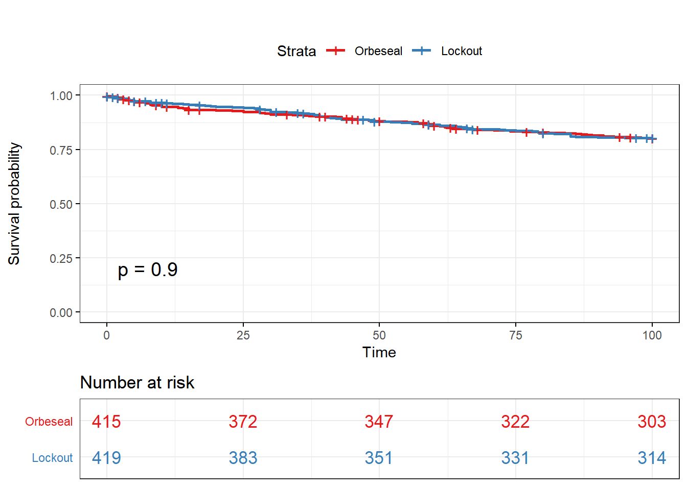
survdiff(Surv(CM2TAR, CM2) ~ Tx,data=lockcow,rho=0)## Call:
## survdiff(formula = Surv(CM2TAR, CM2) ~ Tx, data = lockcow, rho = 0)
##
## N Observed Expected (O-E)^2/E (O-E)^2/V
## Tx=Orbeseal 415 79 78.2 0.00798 0.0158
## Tx=Lockout 419 79 79.8 0.00782 0.0158
##
## Chisq= 0 on 1 degrees of freedom, p= 0.9Model type: Cox proportional hazards analysis with farm included as a cluster variable (robust sandwich standard error estimator) to account for lack of indepedence.
Step 1: Identify potential confouders using a directed acyclic graph (DAG)
Step 2: Identify correlated variables using pearson and kendalls correlation coefficients
Step 3: Create model with all potential confounders
Step 4: Investigate if covariates meet proportional hazards assumption
Step 5: Investigate potential effect measure modification
Step 6: Remove unneccesary covariates in backwards stepwise fashion using 10% rule (i.e. if hazard ratio for algorithm or culture changes by >10% after removing the covariate, the covariate is retained in the model)
Step 7: Report final model
This is used to identify variables that could be confounders if they are not balanced between treatment groups.
library(DiagrammeR)
mermaid("graph LR
T(Treatment)-->U(Clinical mastitis)
A(Age)-->T
P(Parity)-->T
M(Yield at dry-off)-->T
S(SCC during prev lactation)-->T
C(CM in prev lact)-->T
D(DIM at dry-off)--> T
P-->D
D-->M
D-->U
C-->D
A-->U
P-->U
M-->U
S-->U
C-->U
C-->M
P-->C
P-->S
P-->M
A-->P
A-->C
A-->S
A-->M
M-->S
C-->S
style A fill:#FFFFFF, stroke-width:0px
style D fill:#FFFFFF, stroke-width:0px
style T fill:#FFFFFF, stroke-width:2px
style P fill:#FFFFFF, stroke-width:0px
style M fill:#FFFFFF, stroke-width:0px
style S fill:#FFFFFF, stroke-width:0px
style C fill:#FFFFFF, stroke-width:0px
style I fill:#FFFFFF, stroke-width:0px
style U fill:#FFFFFF, stroke-width:2px
")Parity [“Parity”]
Age [“Age”]
Yield at most recent test before dry off [“DOMY”]
Somatic cell count at last herd test during previous lactation [“DOSCC” or “PeakSCC”]
Clinical mastitis in previous lactation [“CM2”]
Days in milk at dry-off [“DODIM”]
Cox proportional hazards regression for clinical mastitis (1-100 DIM)
Cows that did not calve or that had long/short dry periods are excluded. Cows with clinical mastitis prior to calving are included.
Reasons for R censor = 100 DIM or culling/death
library(broom)
library(survival)
SR <- coxph(Surv(CM2TAR, CM2) ~ Parity + DIMDO + MYDO + SCCDO + CM1 + PeakSCC + Tx + cluster(FARMID), data=lockcow)
coxph(Surv(CM2TAR, CM2) ~ Parity + DIMDO + MYDO + SCCDO + CM1 + PeakSCC + Tx + cluster(FARMID), data=lockcow) %>% tidy(exp=TRUE)All variables are P > 0.05 for the schoenfeld test.
SR <- cox.zph(SR)
SR## rho chisq p
## Parity2 -0.00412 0.00434 0.947
## Parity3 0.04493 0.58080 0.446
## Parity4 0.04519 0.38136 0.537
## DIMDO 0.00598 0.00726 0.932
## MYDO -0.08110 1.03450 0.309
## SCCDO -0.11218 1.99025 0.158
## CM11 -0.03890 0.54600 0.460
## PeakSCC 0.01587 0.08724 0.768
## TxLockout -0.04619 0.27021 0.603
## GLOBAL NA 2.09747 0.990
Schoenfield residual plots to assess assumption of proportional hazards.
ggcoxzph(SR,var = c("TxLockout"))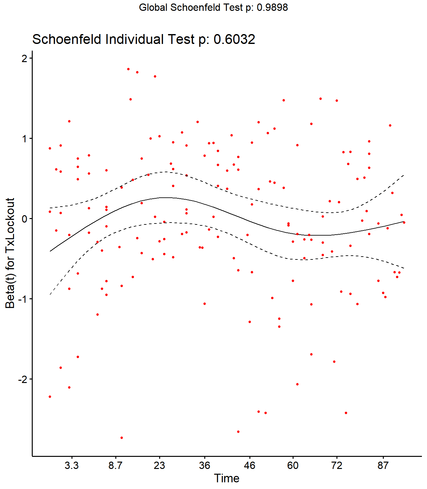
ggcoxzph(SR,var = c("DIMDO","MYDO"))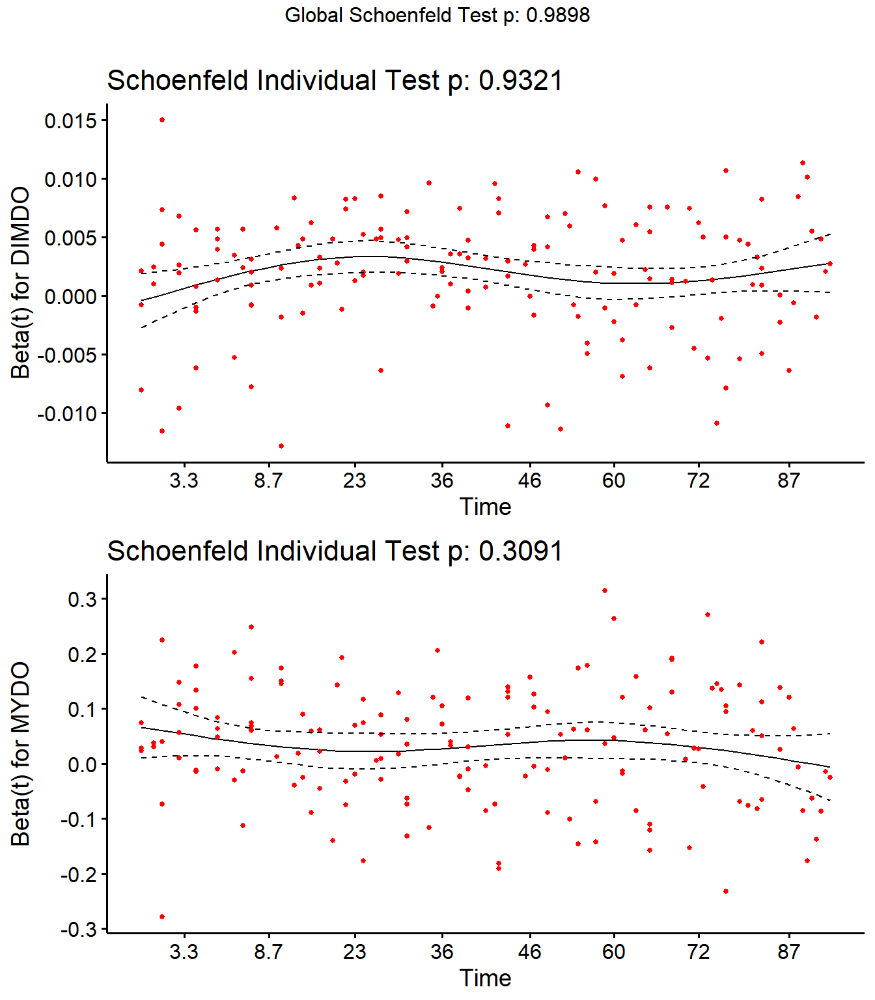
ggcoxzph(SR,var = c("SCCDO","PeakSCC"))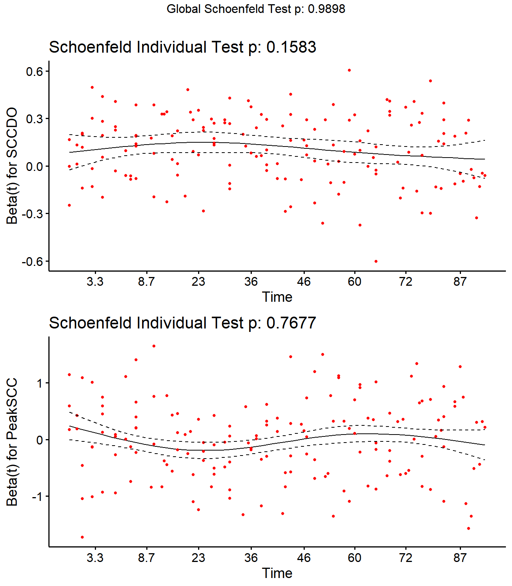
ggcoxzph(SR,var = c("Parity2","Parity3","Parity4"))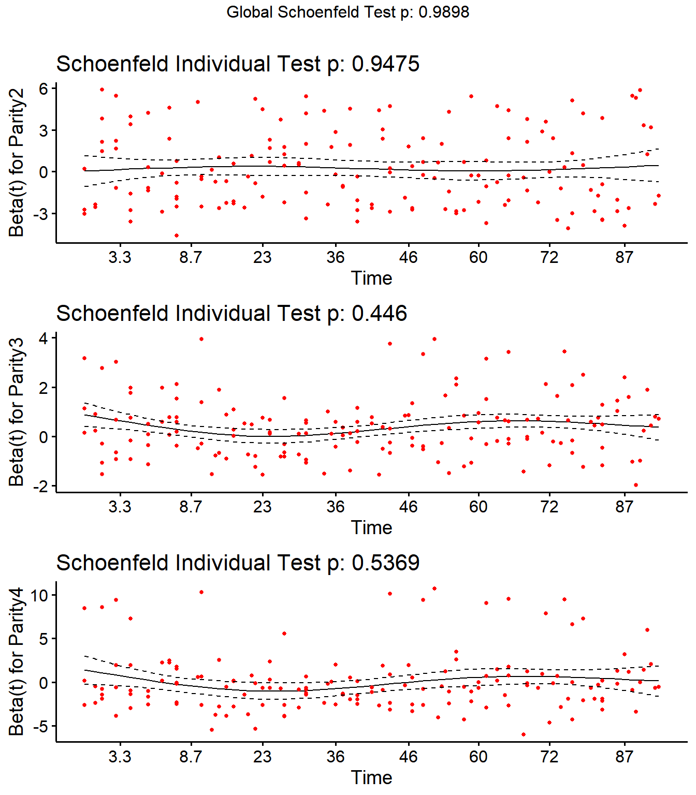
ggcoxzph(SR,var = c("CM11"))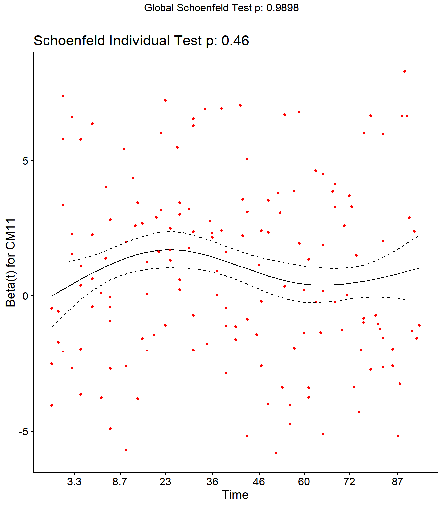
No evidence of time-varying effects on CM hazards for all predictors.
Step 5a: Treatment x Farm interaction (farmid modelled as fixed effect to explore this)
mm0 <- coxph(Surv(CM2TAR, CM2) ~ Parity + MYDO + DIMDO + SCCDO + CM1 + PeakSCC + Tx*factor(FARMID), data=lockcow)
mm0 %>% tidy(exp=TRUE)mm0## Call:
## coxph(formula = Surv(CM2TAR, CM2) ~ Parity + MYDO + DIMDO + SCCDO +
## CM1 + PeakSCC + Tx * factor(FARMID), data = lockcow)
##
## coef exp(coef) se(coef) z p
## Parity2 0.197729 1.218633 0.203591 0.971 0.3314
## Parity3 0.336356 1.399837 0.224784 1.496 0.1346
## Parity4 0.141215 1.151672 0.303073 0.466 0.6413
## MYDO 0.014906 1.015018 0.012116 1.230 0.2186
## DIMDO 0.002079 1.002081 0.001093 1.902 0.0572
## SCCDO 0.045770 1.046833 0.084698 0.540 0.5889
## CM11 0.769259 2.158166 0.186683 4.121 3.78e-05
## PeakSCC 0.026622 1.026979 0.075547 0.352 0.7245
## TxLockout -0.444271 0.641292 0.502099 -0.885 0.3762
## factor(FARMID)2 0.712686 2.039462 0.495795 1.437 0.1506
## factor(FARMID)3 0.741940 2.100005 0.404124 1.836 0.0664
## factor(FARMID)4 -0.002129 0.997873 0.482112 -0.004 0.9965
## factor(FARMID)5 -0.014138 0.985962 0.477943 -0.030 0.9764
## TxLockout:factor(FARMID)2 0.556169 1.743978 0.692990 0.803 0.4222
## TxLockout:factor(FARMID)3 0.449631 1.567734 0.545861 0.824 0.4101
## TxLockout:factor(FARMID)4 -0.052964 0.948414 0.723165 -0.073 0.9416
## TxLockout:factor(FARMID)5 0.736055 2.087683 0.674724 1.091 0.2753
##
## Likelihood ratio test=81.88 on 17 df, p=1.778e-10
## n= 834, number of events= 158
Wald test
library(aod)
wald.test(b = coef(mm0), Sigma = vcov(mm0), Terms = 14:17)## Wald test:
## ----------
##
## Chi-squared test:
## X2 = 2.1, df = 4, P(> X2) = 0.71Wald test for interaction is p > 0.05. No treatment by herd interaction.
Step 5b: Treatment x Previous clinical mastitis
mm0 <- coxph(Surv(CM2TAR, CM2) ~ Parity + DIMDO + MYDO + SCCDO + PeakSCC + Tx*CM1 + cluster(FARMID), data=lockcow)
mm0 %>% tidyp > 0.05. Will not explore this potential effect modification further
Step 5c: Treatment x Parity at dry-off
mm0 <- coxph(Surv(CM2TAR, CM2) ~ DIMDO + SCCDO + PeakSCC + Tx*Parity + MYDO + CM1 + cluster(FARMID), data=lockcow)
mm0 %>% tidyWald test
library(aod)
wald.test(b = coef(mm0), Sigma = vcov(mm0), Terms = 10:12)## Wald test:
## ----------
##
## Chi-squared test:
## X2 = 8.0, df = 3, P(> X2) = 0.045P < 0.05, will explore this potential effect modification further later
The order for removing covariates will be in increasing likelihood of being a confounder, which is based on my knowledge about the variables and their distribution in treatment groups.
This order will be: DOMY, DIMDO, PeakSCC, DOSCC, Parity, CM1
Step 6a: Full model
mm0 <- coxph(Surv(CM2TAR, CM2) ~ Parity + DIMDO + MYDO + SCCDO + CM1 + PeakSCC + Tx + cluster(FARMID), data=lockcow)
mm0 %>% tidy(exp=T) %>% subset(term=="TxLockout",select=c(term,estimate))Step 6b: Remove DOMY
mm0 <- coxph(Surv(CM2TAR, CM2) ~ Parity + DIMDO + SCCDO + CM1 + PeakSCC + Tx + cluster(FARMID), data=lockcow)
mm0 %>% tidy(exp=T) %>% subset(term=="TxLockout",select=c(term,estimate))Changed by <10%
Step 6c: Remove DIMDO
mm0 <- coxph(Surv(CM2TAR, CM2) ~ Parity + SCCDO + CM1 + PeakSCC + Tx + cluster(FARMID), data=lockcow)
mm0 %>% tidy(exp=T) %>% subset(term=="TxLockout",select=c(term,estimate))Changed by <10%
Step 6d: Remove PeakSCC
mm0 <- coxph(Surv(CM2TAR, CM2) ~ Parity + SCCDO + CM1 + Tx + cluster(FARMID), data=lockcow)
mm0 %>% tidy(exp=T) %>% subset(term=="TxLockout",select=c(term,estimate))Changed by <10%
Step 6e: Remove DOSCC
mm0 <- coxph(Surv(CM2TAR, CM2) ~ Parity + CM1 + Tx + cluster(FARMID), data=lockcow)
mm0 %>% tidy(exp=T) %>% subset(term=="TxLockout",select=c(term,estimate))Changed by <10%
Step 6e: Remove Parity
mm0 <- coxph(Surv(CM2TAR, CM2) ~ CM1 + Tx + cluster(FARMID), data=lockcow)
mm0 %>% tidy(exp=T) %>% subset(term=="TxLockout",select=c(term,estimate))Changed by <10%
Step 6e: Remove CM1
mm0 <- coxph(Surv(CM2TAR, CM2) ~ Tx + cluster(FARMID), data=lockcow)
mm0 %>% tidy(exp=T) %>% subset(term=="TxLockout",select=c(term,estimate))Changed by <10%
CoxCM <- coxph(Surv(CM2TAR, CM2) ~ Tx*Parity + cluster(FARMID), data=lockcow)
wald.test(b = coef(CoxCM), Sigma = vcov(CoxCM), Terms = 5:7)## Wald test:
## ----------
##
## Chi-squared test:
## X2 = 8.4, df = 3, P(> X2) = 0.038P < 0.05.
Will stratify analysis
library(emmeans)
CoxCM <- coxph(Surv(CM2TAR, CM2) ~ Tx*Parity + cluster(FARMID), data=lockcow)
emmeans(CoxCM,pairwise ~ Tx | Parity, type = "response")## $emmeans
## Parity = 1:
## Tx response SE df asymp.LCL asymp.UCL
## Orbeseal 0.892 0.0875 NA 0.736 1.081
## Lockout 0.749 0.0798 NA 0.608 0.923
##
## Parity = 2:
## Tx response SE df asymp.LCL asymp.UCL
## Orbeseal 1.085 0.1337 NA 0.853 1.382
## Lockout 1.040 0.1953 NA 0.720 1.503
##
## Parity = 3:
## Tx response SE df asymp.LCL asymp.UCL
## Orbeseal 1.132 0.2255 NA 0.767 1.673
## Lockout 1.826 0.2766 NA 1.357 2.457
##
## Parity = 4:
## Tx response SE df asymp.LCL asymp.UCL
## Orbeseal 1.303 0.1620 NA 1.022 1.663
## Lockout 0.724 0.3915 NA 0.251 2.089
##
## Confidence level used: 0.95
## Intervals are back-transformed from the log scale
##
## $contrasts
## Parity = 1:
## contrast ratio SE df z.ratio p.value
## Orbeseal / Lockout 1.19 0.163 NA 1.282 0.1998
##
## Parity = 2:
## contrast ratio SE df z.ratio p.value
## Orbeseal / Lockout 1.04 0.206 NA 0.214 0.8308
##
## Parity = 3:
## contrast ratio SE df z.ratio p.value
## Orbeseal / Lockout 0.62 0.202 NA -1.466 0.1427
##
## Parity = 4:
## contrast ratio SE df z.ratio p.value
## Orbeseal / Lockout 1.80 0.956 NA 1.108 0.2677
##
## Tests are performed on the log scaleNote that ratios are inverted. These findings indicate that the hazard ratio within parity=3 cows is different to the others. All stratified effect estimates (HR) have wide confidence intervals that greatly overlap one-another. Also, there appears to be little biologic explanation for why parity 3 cows behave differently to the others. This may be a spurious finding.
Decision: Report main effects.
No covariates included, as no evidence for confounding.
CoxCM <- coxph(Surv(CM2TAR, CM2) ~ Tx + cluster(FARMID), data=lockcow)
CoxCM %>% tidy(exp=T)cox.zph(CoxCM)## rho chisq p
## TxLockout 0.0256 0.0333 0.855SR <- cox.zph(CoxCM)
ggcoxzph(SR,var = c("TxLockout"))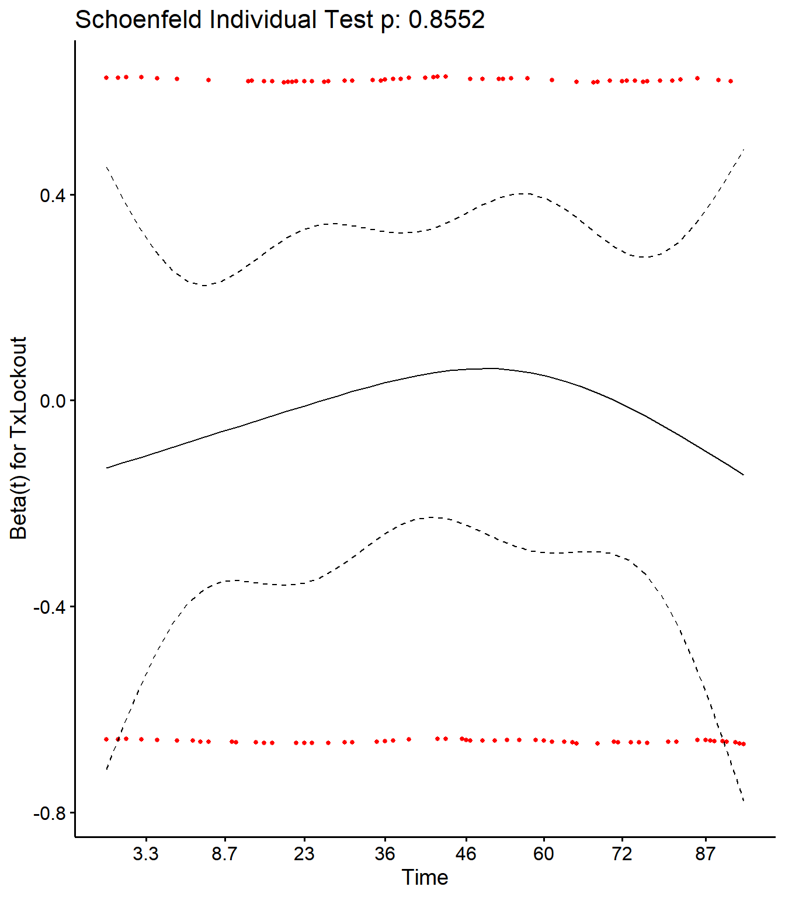
CrossTable(lockcow$Tx,lockcow$Rem2,prop.c=FALSE,prop.t=FALSE,prop.chisq = FALSE)##
##
## Cell Contents
## |-------------------------|
## | N |
## | N / Row Total |
## |-------------------------|
##
##
## Total Observations in Table: 834
##
##
## | lockcow$Rem2
## lockcow$Tx | 0 | 1 | Row Total |
## -------------|-----------|-----------|-----------|
## Orbeseal | 370 | 45 | 415 |
## | 0.892 | 0.108 | 0.498 |
## -------------|-----------|-----------|-----------|
## Lockout | 376 | 43 | 419 |
## | 0.897 | 0.103 | 0.502 |
## -------------|-----------|-----------|-----------|
## Column Total | 746 | 88 | 834 |
## -------------|-----------|-----------|-----------|
##
## Kaplan Meier curve
library(ggplot2)
library(survminer)
KM <- survfit(Surv(Rem2TAR, Rem2) ~ Tx, data = lockcow)
#knitr::opts_chunk$set(fig.width = 800, fig.height = 900)
ggsurvplot(KM, data = lockcow, title = "", pval = T, conf.int = F,risk.table.col = "Tx",risk.table = T, risk.table.y.text.col = TRUE , surv.plot.height = 5, legend.labs = c("Orbeseal","Lockout"), tables.theme = theme_cleantable(), ggtheme = theme_bw(base_family = "Times"), palette = "Set1")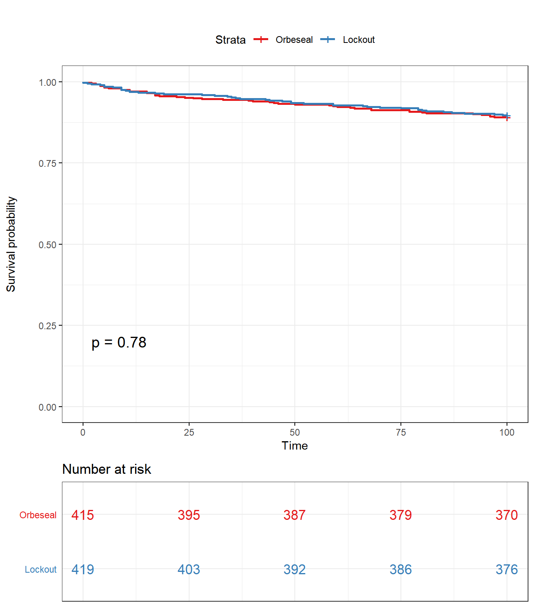
survdiff(Surv(Rem2TAR, Rem2) ~ Tx,data=lockcow,rho=0)## Call:
## survdiff(formula = Surv(Rem2TAR, Rem2) ~ Tx, data = lockcow,
## rho = 0)
##
## N Observed Expected (O-E)^2/E (O-E)^2/V
## Tx=Orbeseal 415 45 43.7 0.0394 0.0784
## Tx=Lockout 419 43 44.3 0.0388 0.0784
##
## Chisq= 0.1 on 1 degrees of freedom, p= 0.8Model type: Cox proportional hazards analysis with farm included as a cluster variable (robust sandwich standard error estimator) to account for lack of indepedence.
Step 1: Identify potential confouders using a directed acyclic graph (DAG)
Step 2: Identify correlated variables using pearson and kendalls correlation coefficients
Step 3: Create model with all potential confounders
Step 4: Investigate if covariates meet proportional hazards assumption
Step 5: Investigate potential effect measure modification
Step 6: Remove unneccesary covariates in backwards stepwise fashion using 10% rule (i.e. if hazard ratio for algorithm or culture changes by >10% after removing the covariate, the covariate is retained in the model)
Step 7: Report final model
This is used to identify variables that could be confounders if they are not balanced between treatment groups.
library(DiagrammeR)
mermaid("graph LR
T(Treatment)-->U(Culling or death)
A(Age)-->T
P(Parity)-->T
M(Yield at dry-off)-->T
S(SCC during prev lactation)-->T
C(CM in prev lact)-->T
D(DIM at dry-off)--> T
P-->D
D-->M
D-->U
C-->D
A-->U
P-->U
M-->U
S-->U
C-->U
C-->M
P-->C
P-->S
P-->M
A-->P
A-->C
A-->S
A-->M
M-->S
C-->S
style A fill:#FFFFFF, stroke-width:0px
style D fill:#FFFFFF, stroke-width:0px
style T fill:#FFFFFF, stroke-width:2px
style P fill:#FFFFFF, stroke-width:0px
style M fill:#FFFFFF, stroke-width:0px
style S fill:#FFFFFF, stroke-width:0px
style C fill:#FFFFFF, stroke-width:0px
style I fill:#FFFFFF, stroke-width:0px
style U fill:#FFFFFF, stroke-width:2px
")Parity [“Parity”]
Age [“Age”]
Yield at most recent test before dry off [“DOMY”]
Somatic cell count at last herd test during previous lactation [“DOSCC” and “PeakSCC”]
Clinical mastitis in previous lactation [“CM2”]
DIM at dry-off [“DODIM”]
Cox proportional hazards regression for culling or death (1-100 DIM)
Cows that did not calve or that had long/short dry periods are excluded.
Reasons for R censor = 100 DIM
library(broom)
library(survival)
SR <- coxph(Surv(Rem2TAR, Rem2) ~ Parity + DIMDO + MYDO + SCCDO + CM1 + PeakSCC + Tx + cluster(FARMID), data=lockcow)
SR %>% tidy(exp=TRUE)All variables are P > 0.05 for the schoenfeld test.
SR <- cox.zph(SR)
SR## rho chisq p
## Parity2 0.1825 0.828 0.363
## Parity3 0.0958 1.754 0.185
## Parity4 0.0752 0.868 0.352
## DIMDO -0.0525 0.371 0.543
## MYDO 0.0340 0.215 0.643
## SCCDO -0.0634 0.844 0.358
## CM11 -0.0276 0.068 0.794
## PeakSCC 0.0344 0.182 0.670
## TxLockout 0.0732 1.049 0.306
## GLOBAL NA 2.351 0.985
Schoenfield residual plots to assess assumption of proportional hazards.
ggcoxzph(SR,var = c("TxLockout"))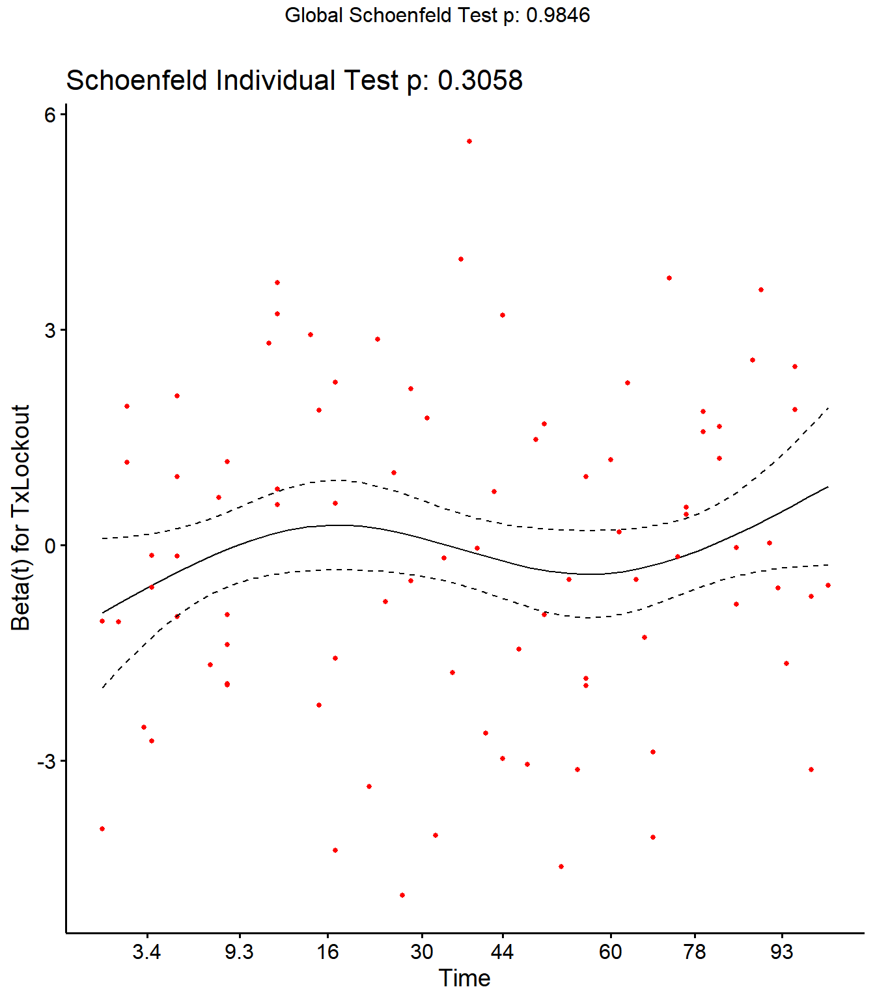
ggcoxzph(SR,var = c("DIMDO","MYDO"))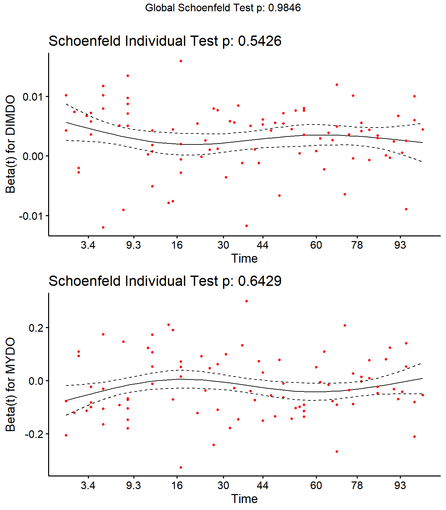
ggcoxzph(SR,var = c("SCCDO","PeakSCC"))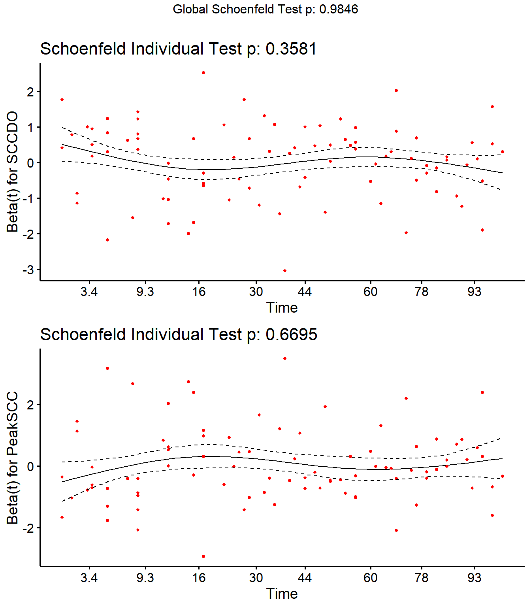
ggcoxzph(SR,var = c("Parity2","Parity3","Parity4"))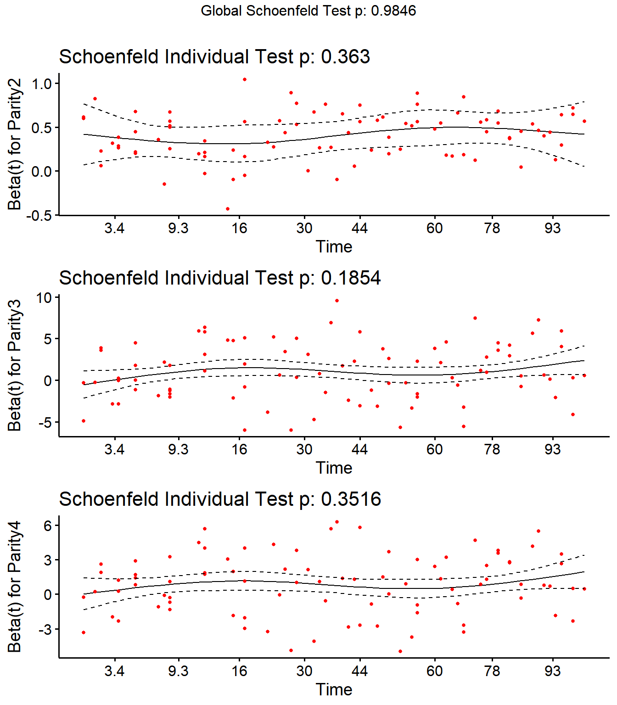
ggcoxzph(SR,var = c("CM11"))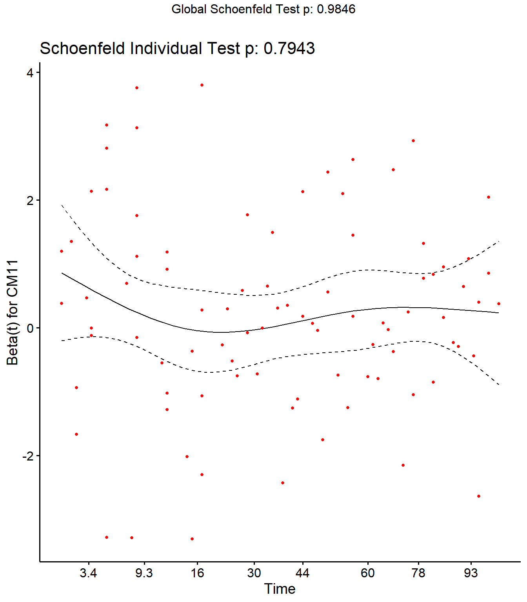
No evidence of time-varying effects on CM hazards for all predictors.
Step 5a: Treatment x Farm interaction (farmid modelled as fixed effect to explore this)
mm0 <- coxph(Surv(Rem2TAR, Rem2) ~ Parity + MYDO + DIMDO + SCCDO + CM1 + PeakSCC + Tx*factor(FARMID), data=lockcow)
mm0 %>% tidy(exp=TRUE)mm0## Call:
## coxph(formula = Surv(Rem2TAR, Rem2) ~ Parity + MYDO + DIMDO +
## SCCDO + CM1 + PeakSCC + Tx * factor(FARMID), data = lockcow)
##
## coef exp(coef) se(coef) z p
## Parity2 0.319551 1.376510 0.303508 1.053 0.29241
## Parity3 0.807440 2.242160 0.306905 2.631 0.00852
## Parity4 0.773447 2.167224 0.368774 2.097 0.03596
## MYDO -0.051362 0.949935 0.015952 -3.220 0.00128
## DIMDO 0.003296 1.003301 0.001170 2.816 0.00486
## SCCDO -0.034830 0.965769 0.103408 -0.337 0.73625
## CM11 0.143937 1.154812 0.255070 0.564 0.57255
## PeakSCC 0.043460 1.044418 0.104759 0.415 0.67824
## TxLockout -0.151952 0.859030 0.514599 -0.295 0.76778
## factor(FARMID)2 0.159409 1.172818 0.817358 0.195 0.84537
## factor(FARMID)3 0.896603 2.451261 0.492432 1.821 0.06864
## factor(FARMID)4 1.049303 2.855660 0.515674 2.035 0.04187
## factor(FARMID)5 0.635733 1.888406 0.523936 1.213 0.22498
## TxLockout:factor(FARMID)2 0.504861 1.656755 1.049249 0.481 0.63040
## TxLockout:factor(FARMID)3 0.345096 1.412125 0.614087 0.562 0.57414
## TxLockout:factor(FARMID)4 -0.218450 0.803763 0.730982 -0.299 0.76506
## TxLockout:factor(FARMID)5 -0.323133 0.723878 0.770892 -0.419 0.67509
##
## Likelihood ratio test=48.65 on 17 df, p=6.822e-05
## n= 834, number of events= 88
Wald test
library(aod)
wald.test(b = coef(mm0), Sigma = vcov(mm0), Terms = 14:17)## Wald test:
## ----------
##
## Chi-squared test:
## X2 = 1.7, df = 4, P(> X2) = 0.79Wald test for interaction is p > 0.05. No treatment by herd interaction.
Step 5b: Treatment x milk yield at dry-off
mm0 <- coxph(Surv(Rem2TAR, Rem2) ~ Parity + DIMDO + SCCDO + PeakSCC + Tx*MYDO + CM1 + cluster(FARMID), data=lockcow)
mm0 %>% tidyp > 0.05. Will not explore this effect modification further
Step 5c: Treatment x Parity at dry-off
mm0 <- coxph(Surv(Rem2TAR, Rem2) ~ DIMDO + SCCDO + PeakSCC + Tx*factor(Parity) + MYDO + CM1 + cluster(FARMID), data=lockcow)
mm0 %>% tidyWald test
library(aod)
wald.test(b = coef(mm0), Sigma = vcov(mm0), Terms = 10:12)## Wald test:
## ----------
##
## Chi-squared test:
## X2 = 4.8, df = 3, P(> X2) = 0.18P > 0.05, will not explore this potential effect modification further
The order for removing covariates will be in increasing likelihood of being a confounder, which is based on my knowledge about the variables and their distribution in treatment groups.
This order will be: PeakSCC, DOSCC, CM1, DIMDO, DOMY, Parity
Step 6a: Full model
mm0 <- coxph(Surv(Rem2TAR, Rem2) ~ Parity + DIMDO + MYDO + SCCDO + CM1 + PeakSCC + Tx + cluster(FARMID), data=lockcow)
mm0 %>% tidy(exp=T) %>% subset(term=="TxLockout",select=c(term,estimate))Changed by < 10%. Stays out
Step 6b: Removed PeakSCC
mm0 <- coxph(Surv(Rem2TAR, Rem2) ~ Parity + DIMDO + MYDO + SCCDO + CM1 + Tx + cluster(FARMID), data=lockcow)
mm0 %>% tidy(exp=T) %>% subset(term=="TxLockout",select=c(term,estimate))Changed by < 10%. Stays out
Step 6c: Removed DOSCC
mm0 <- coxph(Surv(Rem2TAR, Rem2) ~ Parity + DIMDO + MYDO + CM1 + Tx + cluster(FARMID), data=lockcow)
mm0 %>% tidy(exp=T) %>% subset(term=="TxLockout",select=c(term,estimate))Changed by < 10%. Stays out
Step 6d: Removed CM1
mm0 <- coxph(Surv(Rem2TAR, Rem2) ~ Parity + DIMDO + MYDO + Tx + cluster(FARMID), data=lockcow)
mm0 %>% tidy(exp=T) %>% subset(term=="TxLockout",select=c(term,estimate))Changed by < 10%. Stays out
Step 6e: Removed DIMDO
mm0 <- coxph(Surv(Rem2TAR, Rem2) ~ Parity + MYDO + Tx + cluster(FARMID), data=lockcow)
mm0 %>% tidy(exp=T) %>% subset(term=="TxLockout",select=c(term,estimate))Changed by < 10%. Stays out
Step 6f: Removed DOMY
mm0 <- coxph(Surv(Rem2TAR, Rem2) ~ Parity + Tx + cluster(FARMID), data=lockcow)
mm0 %>% tidy(exp=T) %>% subset(term=="TxLockout",select=c(term,estimate))Changed by < 10%. Stays out
Step 6f: Removed Parity
mm0 <- coxph(Surv(Rem2TAR, Rem2) ~ Tx + cluster(FARMID), data=lockcow)
mm0 %>% tidy(exp=T) %>% subset(term=="TxLockout",select=c(term,estimate))Changed by < 10%. Stays out
No covariates included, as no evidence for confounding.
CoxRem <- coxph(Surv(Rem2TAR, Rem2) ~ Tx + cluster(FARMID), data=lockcow)
CoxRem %>% tidy(exp=T)cox.zph(CoxRem)## rho chisq p
## TxLockout 0.0241 0.0381 0.845SR <- cox.zph(CoxRem)
ggcoxzph(SR,var = c("TxLockout"))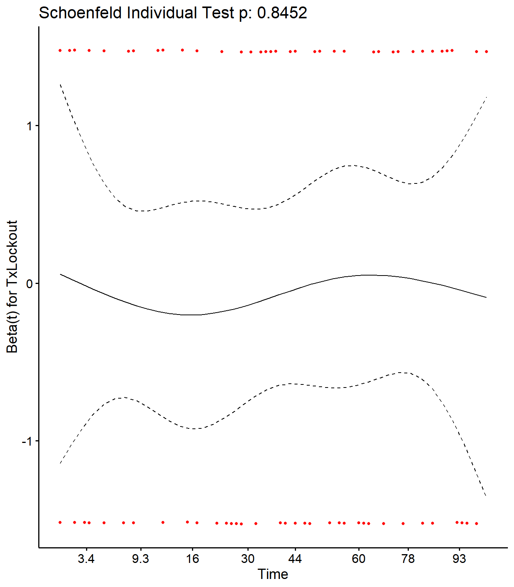
Dataset example
DHIcheck <- lockcowdhi %>% select(Tx,Cow,FARMID,TestDIMcat20,SCC,MY,Parity,CM1,MYDO,SCCDO)
head(DHIcheck, n=10)
lockcowdhi <- lockcowdhi[!is.na(lockcowdhi$Tx),]
DHIoutcome <- lockcowdhi %>% select(FARMID,Cow,Tx,Age,Parity,SCCDO,MYDO,DIMDO,CM1,PeakSCC,DPlength,MY,SCC)
print(summarytools::dfSummary(DHIoutcome,valid.col=FALSE, graph.magnif=0.8, style="grid"))## Data Frame Summary
##
## Dimensions: 2479 x 13
## Duplicates: 4
##
## +----+-----------+---------------------------+---------------------+----------------------------------------+---------+
## | No | Variable | Stats / Values | Freqs (% of Valid) | Graph | Missing |
## +====+===========+===========================+=====================+========================================+=========+
## | 1 | FARMID | Mean (sd) : 2.9 (1.4) | 1 : 581 (23.4%) | IIII | 0 |
## | | [numeric] | min < med < max: | 2 : 246 ( 9.9%) | I | (0%) |
## | | | 1 < 3 < 5 | 3 : 824 (33.2%) | IIIIII | |
## | | | IQR (CV) : 2 (0.5) | 4 : 448 (18.1%) | III | |
## | | | | 5 : 380 (15.3%) | III | |
## +----+-----------+---------------------------+---------------------+----------------------------------------+---------+
## | 2 | Cow | Mean (sd) : 9.4 (1.3) | 795 distinct values | : | 0 |
## | | [numeric] | min < med < max: | | : : : : | (0%) |
## | | | 6.3 < 10.1 < 11.2 | | : : : : | |
## | | | IQR (CV) : 2.3 (0.1) | | . : : : : : | |
## | | | | | . . : : : : : : : | |
## +----+-----------+---------------------------+---------------------+----------------------------------------+---------+
## | 3 | Tx | 1. Orbeseal | 1230 (49.6%) | IIIIIIIII | 0 |
## | | [factor] | 2. Lockout | 1249 (50.4%) | IIIIIIIIII | (0%) |
## +----+-----------+---------------------------+---------------------+----------------------------------------+---------+
## | 4 | Age | Mean (sd) : 45.6 (15.1) | 549 distinct values | : | 0 |
## | | [numeric] | min < med < max: | | : | (0%) |
## | | | 17 < 43.6 < 117 | | : . | |
## | | | IQR (CV) : 22.3 (0.3) | | : : : . | |
## | | | | | : : : : : . | |
## +----+-----------+---------------------------+---------------------+----------------------------------------+---------+
## | 5 | Parity | 1. 1 | 1087 (43.9%) | IIIIIIII | 0 |
## | | [factor] | 2. 2 | 727 (29.3%) | IIIII | (0%) |
## | | | 3. 3 | 422 (17.0%) | III | |
## | | | 4. 4 | 243 ( 9.8%) | I | |
## +----+-----------+---------------------------+---------------------+----------------------------------------+---------+
## | 6 | SCCDO | Mean (sd) : 4.5 (1.2) | 324 distinct values | . : | 0 |
## | | [numeric] | min < med < max: | | : : | (0%) |
## | | | 0 < 4.5 < 8.9 | | . : : . | |
## | | | IQR (CV) : 1.5 (0.3) | | : : : : | |
## | | | | | . : : : : : | |
## +----+-----------+---------------------------+---------------------+----------------------------------------+---------+
## | 7 | MYDO | Mean (sd) : 25.4 (9) | 91 distinct values | : | 0 |
## | | [numeric] | min < med < max: | | . : . | (0%) |
## | | | 1.8 < 25.9 < 49 | | : : : : : . | |
## | | | IQR (CV) : 14.1 (0.4) | | : : : : : : | |
## | | | | | . : : : : : : : : . | |
## +----+-----------+---------------------------+---------------------+----------------------------------------+---------+
## | 8 | DIMDO | Mean (sd) : 327.4 (65.4) | 191 distinct values | : | 0 |
## | | [numeric] | min < med < max: | | : | (0%) |
## | | | 256 < 305 < 869 | | : . | |
## | | | IQR (CV) : 55 (0.2) | | : : | |
## | | | | | : : : . | |
## +----+-----------+---------------------------+---------------------+----------------------------------------+---------+
## | 9 | CM1 | 1. 0 | 1866 (75.3%) | IIIIIIIIIIIIIII | 0 |
## | | [factor] | 2. 1 | 613 (24.7%) | IIII | (0%) |
## +----+-----------+---------------------------+---------------------+----------------------------------------+---------+
## | 10 | PeakSCC | Mean (sd) : 5.7 (1.2) | 524 distinct values | : | 0 |
## | | [numeric] | min < med < max: | | : . | (0%) |
## | | | 3 < 5.5 < 9.2 | | : : : : | |
## | | | IQR (CV) : 1.7 (0.2) | | : : : : : : . | |
## | | | | | . : : : : : : : . . | |
## +----+-----------+---------------------------+---------------------+----------------------------------------+---------+
## | 11 | DPlength | Mean (sd) : 55.3 (8.6) | 48 distinct values | . : | 0 |
## | | [numeric] | min < med < max: | | : : : | (0%) |
## | | | 30 < 56 < 85 | | : : : . | |
## | | | IQR (CV) : 13 (0.2) | | : : : : : | |
## | | | | | : : : : : : : | |
## +----+-----------+---------------------------+---------------------+----------------------------------------+---------+
## | 12 | MY | Mean (sd) : 43.1 (13.3) | 140 distinct values | : . | 0 |
## | | [numeric] | min < med < max: | | . : : | (0%) |
## | | | 1.8 < 44 < 82.1 | | : : : : | |
## | | | IQR (CV) : 19.1 (0.3) | | . : : : : . | |
## | | | | | . : : : : : : . | |
## +----+-----------+---------------------------+---------------------+----------------------------------------+---------+
## | 13 | SCC | Mean (sd) : 4.1 (1.5) | 557 distinct values | : | 0 |
## | | [numeric] | min < med < max: | | : . | (0%) |
## | | | 0 < 3.8 < 9.2 | | : : | |
## | | | IQR (CV) : 1.7 (0.4) | | . : : : | |
## | | | | | : : : : : . . | |
## +----+-----------+---------------------------+---------------------+----------------------------------------+---------+Very little missing data. Will do complete case analysis.
Somatic cell count (log x 10,000 cells)
library(qualityTools)
qualityTools::qqPlot(lockcowdhi$SCC)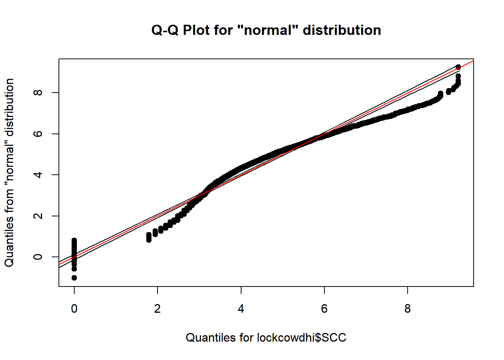
hist(log(lockcowdhi$SCC+1))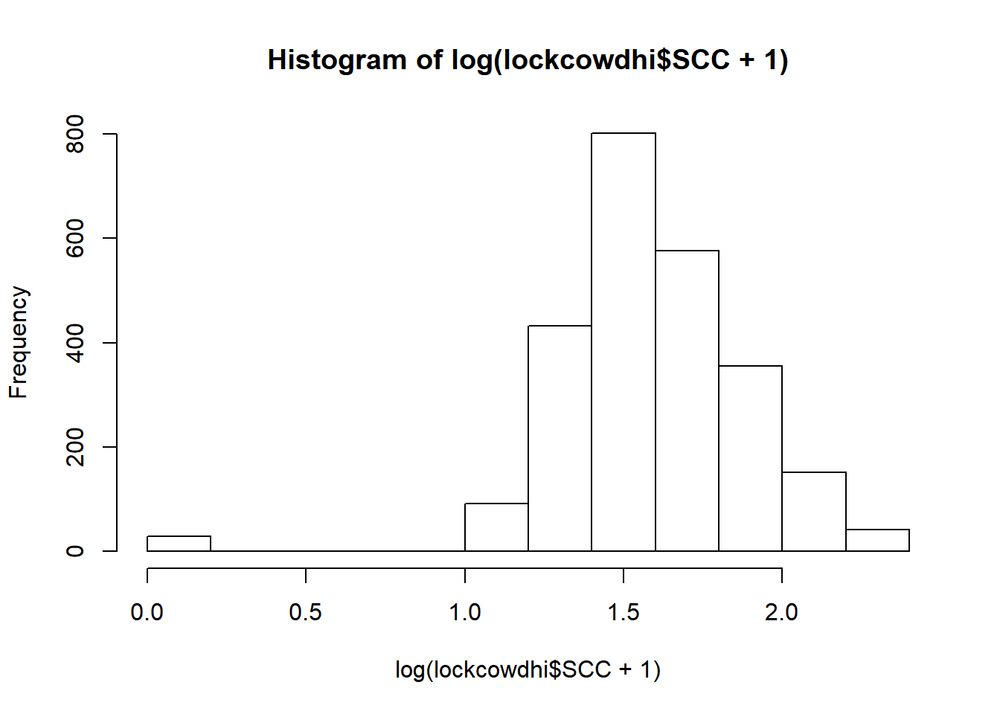
Milk yield (kg)
qqPlot(lockcowdhi$MY)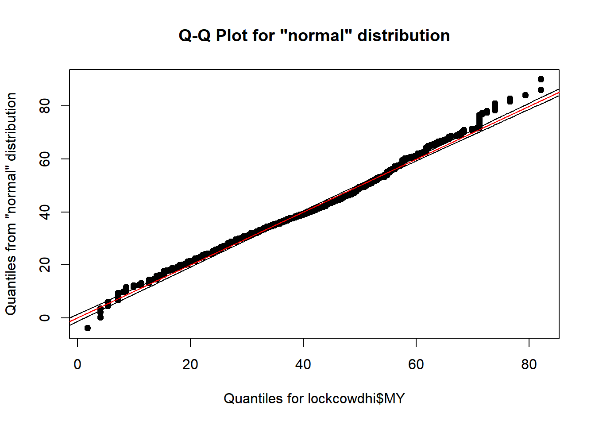
hist(lockcowdhi$MY)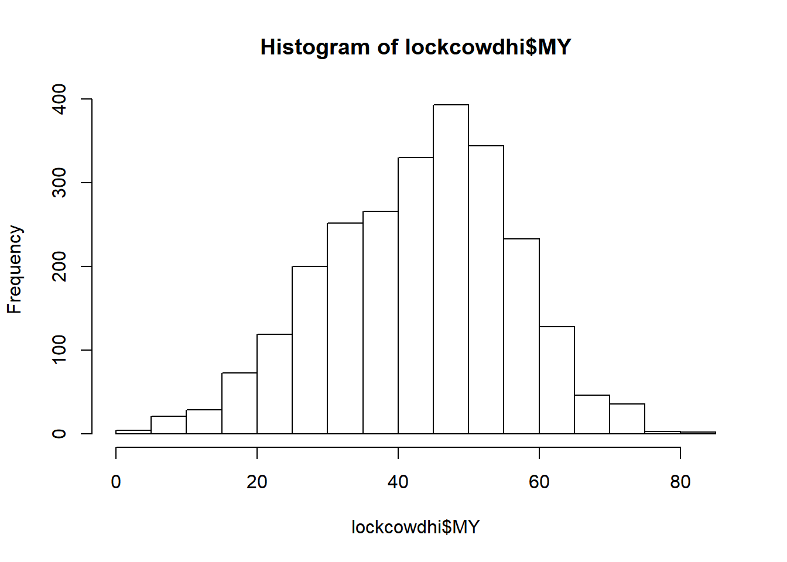
Model type: Linear mixed models, random intercepts for farm and cow will be fitted to account for repeated measures within cows, and clustering of cows within herds
Step 1: Identify potential confouders using a directed acyclic graph (DAG)
Step 2: Identify correlated variables using pearson and kendalls correlation coefficients
Step 3: Create model with all potential confounders
Step 4: Investigate potential effect measure modification
Step 5: Remove unneccesary covariates in backwards stepwise fashion using 10% rule (i.e. if estimated difference in SCC changes by >10% after removing the covariate, the covariate is retained in the model)
Step 6: Report final model
Step 7: Model diagnostics
library(DiagrammeR)
mermaid("graph LR
T(Treatment)-->U(SCC)
A(Age)-->T
P(Parity)-->T
M(Yield at dry-off)-->T
S(SCC during prev lactation)-->T
C(CM in prev lact)-->T
D(Days in milk at test)-->U
K(Days in milk at dry off) --> M
C-->K
K-->T
D-->T
A-->U
P-->U
M-->U
S-->U
C-->U
C-->M
P-->C
P-->S
P-->M
A-->P
A-->C
A-->S
A-->M
M-->S
C-->S
style K fill:#FFFFFF, stroke-width:0px
style A fill:#FFFFFF, stroke-width:0px
style T fill:#FFFFFF, stroke-width:2px
style P fill:#FFFFFF, stroke-width:0px
style M fill:#FFFFFF, stroke-width:0px
style S fill:#FFFFFF, stroke-width:0px
style C fill:#FFFFFF, stroke-width:0px
style I fill:#FFFFFF, stroke-width:0px
style D fill:#FFFFFF, stroke-width:0px
style U fill:#FFFFFF, stroke-width:2px
")Parity [“Parity”] <- Age not offered as correlated (will confirm)
Yield at most recent test before dry off [“DOMY”]
Somatic cell count during previous lactation [“DOSCC” and “PeakSCC”]
Days in milk at dry-off [“DIMDO”]
Clinical mastitis in previous lactation [“PrevCM”]
Days in milk at herd test (category, 0-20 “10”, 21-40 “30” etc) [“TestDIMcat20”]
library(lme4)
mm0 <- lmer(SCC ~ Tx + TestDIMcat20 + Parity + SCCDO + PeakSCC + MYDO + CM1 + DIMDO + (1|FARMID/Cow), data=lockcowdhi)
mm0 %>% tidy
Will investigate with Farm, TestDIMCat and Parity
Tx:FARMID
mm0 <- lmer(SCC ~ Tx*FARMID + TestDIMcat20 + Parity + SCCDO + PeakSCC + MYDO + CM1 + DIMDO + (1|Cow), data=lockcowdhi)
car::Anova(mm0) %>% tidyP > 0.05. Will not investigate this further.
Tx:TestDIMCat
mm0 <- lmer(SCC ~ Tx*TestDIMcat20 + Parity + SCCDO + PeakSCC + MYDO + CM1 + DIMDO + (1|FARMID/Cow), data=lockcowdhi)
car::Anova(mm0) %>% tidyP > 0.05. Will not investigate this further.
Tx:Parity
mm0 <- lmer(SCC ~ Tx*factor(Parity) + TestDIMcat20 + SCCDO + PeakSCC + MYDO + CM1 + DIMDO + (1|FARMID/Cow), data=lockcowdhi)
car::Anova(mm0) %>% tidyP > 0.05. Will not investigate this further.
The order for removing covariates will be in increasing likelihood of being a confounder, which is based on my knowledge about the variables and their distribution in treatment groups.
This order will be: DIMDO, DOMY, Parity, CM1, DOSCC, PeakSCC
TestDIMcat20 will not be removed.
Step 5a: Full model
mm0 <- lmer(SCC ~ Tx + Parity + TestDIMcat20 + SCCDO + PeakSCC + MYDO + CM1 + DIMDO + (1|FARMID/Cow), data=lockcowdhi)
mm0 %>% tidy(conf.int=T) %>% subset(term=="TxLockout")
Step 5b: Removed DIMDO
mm0 <- lmer(SCC ~ Tx + Parity + TestDIMcat20 + SCCDO + PeakSCC + MYDO + CM1 + (1|FARMID/Cow), data=lockcowdhi)
mm0 %>% tidy() %>% subset(term=="TxLockout",select=c(term,estimate))Changed by <10%. Stays out.
Step 5b: Removed MYDO
mm0 <- lmer(SCC ~ Tx + Parity + TestDIMcat20 + SCCDO + PeakSCC + CM1 + (1|FARMID/Cow), data=lockcowdhi)
mm0 %>% tidy() %>% subset(term=="TxLockout",select=c(term,estimate))Changed by <10%. Stays out.
Step 5c: Removed Parity
mm0 <- lmer(SCC ~ Tx + TestDIMcat20 + SCCDO + PeakSCC + CM1 + (1|FARMID/Cow), data=lockcowdhi)
mm0 %>% tidy() %>% subset(term=="TxLockout",select=c(term,estimate))Changed by >10%. Stays in.
Step 5d: Removed CM1
mm0 <- lmer(SCC ~ Tx + Parity + TestDIMcat20 + SCCDO + PeakSCC + (1|FARMID/Cow), data=lockcowdhi)
mm0 %>% tidy() %>% subset(term=="TxLockout",select=c(term,estimate))Changed by >10%. Stays in.
Step 5e: Removed SCCDO
mm0 <- lmer(SCC ~ Tx + Parity + TestDIMcat20 + PeakSCC + CM1 + (1|FARMID/Cow), data=lockcowdhi)
mm0 %>% tidy() %>% subset(term=="TxLockout",select=c(term,estimate))Changed by <10%. Stays out
Step 5e: Removed PeakSCC
mm0 <- lmer(SCC ~ Tx + Parity + TestDIMcat20 + CM1 + (1|FARMID/Cow), data=lockcowdhi)
mm0 %>% tidy() %>% subset(term=="TxLockout",select=c(term,estimate))Changed by >10%. Stays in.
mm0 <- lmer(SCC ~ Tx + Parity + TestDIMcat20 + CM1 + PeakSCC + (1|FARMID/Cow), data=lockcowdhi)
mm0 %>% summary## Linear mixed model fit by REML ['lmerMod']
## Formula:
## SCC ~ Tx + Parity + TestDIMcat20 + CM1 + PeakSCC + (1 | FARMID/Cow)
## Data: lockcowdhi
##
## REML criterion at convergence: 8477.7
##
## Scaled residuals:
## Min 1Q Median 3Q Max
## -4.5281 -0.5276 -0.1231 0.4384 4.0686
##
## Random effects:
## Groups Name Variance Std.Dev.
## Cow:FARMID (Intercept) 0.7281 0.8533
## FARMID (Intercept) 0.0000 0.0000
## Residual 1.2771 1.1301
## Number of obs: 2479, groups: Cow:FARMID, 802; FARMID, 5
##
## Fixed effects:
## Estimate Std. Error t value
## (Intercept) 3.31934 0.19530 16.996
## TxLockout 0.05658 0.07603 0.744
## Parity2 0.18880 0.09089 2.077
## Parity3 0.20793 0.10994 1.891
## Parity4 0.37256 0.13742 2.711
## TestDIMcat2021-40 -0.55178 0.08047 -6.857
## TestDIMcat2041-60 -0.46875 0.07496 -6.254
## TestDIMcat2061-80 -0.38467 0.07255 -5.302
## TestDIMcat2081-100 -0.31365 0.07847 -3.997
## CM11 0.27474 0.09482 2.897
## PeakSCC 0.15819 0.03339 4.737
##
## Correlation of Fixed Effects:
## (Intr) TxLckt Party2 Party3 Party4 TDIM202 TDIM204 TDIM206
## TxLockout -0.151
## Parity2 -0.120 0.001
## Parity3 -0.011 0.010 0.353
## Parity4 0.022 0.051 0.286 0.261
## TDIM2021-40 -0.211 0.011 -0.001 0.012 0.003
## TDIM2041-60 -0.203 -0.007 0.013 0.019 0.014 0.490
## TDIM2061-80 -0.214 0.003 0.005 0.007 -0.002 0.526 0.508
## TDIM2081-10 -0.221 0.008 0.012 0.018 0.008 0.549 0.507 0.520
## CM11 0.236 0.033 -0.045 -0.072 -0.052 -0.024 -0.007 -0.012
## PeakSCC -0.895 -0.056 -0.070 -0.154 -0.164 0.009 0.003 0.010
## TDIM208 CM11
## TxLockout
## Parity2
## Parity3
## Parity4
## TDIM2021-40
## TDIM2041-60
## TDIM2061-80
## TDIM2081-10
## CM11 -0.025
## PeakSCC 0.018 -0.348
## convergence code: 0
## boundary (singular) fit: see ?isSingularmm0 %>% tidy(conf.int=T)mm0 <- lmer(SCC ~ 1 + (1|FARMID/Cow), data=lockcowdhi)
summary(mm0)## Linear mixed model fit by REML ['lmerMod']
## Formula: SCC ~ 1 + (1 | FARMID/Cow)
## Data: lockcowdhi
##
## REML criterion at convergence: 8571.8
##
## Scaled residuals:
## Min 1Q Median 3Q Max
## -4.0638 -0.5379 -0.1368 0.4386 3.9743
##
## Random effects:
## Groups Name Variance Std.Dev.
## Cow:FARMID (Intercept) 8.048e-01 0.8970861
## FARMID (Intercept) 1.050e-09 0.0000324
## Residual 1.321e+00 1.1493656
## Number of obs: 2479, groups: Cow:FARMID, 802; FARMID, 5
##
## Fixed effects:
## Estimate Std. Error t value
## (Intercept) 4.10659 0.03938 104.3
## convergence code: 0
## boundary (singular) fit: see ?isSingularICC (CowID) = 0.38 ICC (FARMID) = 0.0
Most clustering is happening within cow, which is not a suprise given this is longitudinal data.
Mean logSCC
mm0 <- lmer(SCC ~ Tx + Parity + TestDIMcat20 + CM1 + PeakSCC + (1|FARMID/Cow), data=lockcowdhi)
emm <- emmeans(mm0, ~Tx) %>% tidy()
emmGeometric mean SCC
mm0 <- lmer(SCC ~ Tx + Parity + TestDIMcat20 + CM1 + PeakSCC + (1|FARMID/Cow), data=lockcowdhi)
emm <- emmeans(mm0, ~Tx) %>% tidy()
emm$SCC <- exp(emm$estimate)
emm$LCL <- exp(emm$conf.low)
emm$UCL <- exp(emm$conf.high)
#emm$estimate <- NULL
#emm$std.error <- NULL
#emm$conf.low <- NULL
#emm$conf.high <- NULL
#emm$df <- NULL
emm <- emm %>% subset(select=c(Tx,SCC,LCL,UCL))
emm
Reported as back-transformed estimated marginal means by herd test day, no interaction with test DIM
windowsFonts(Times=windowsFont("Times New Roman"))
mm0 <- lmer(SCC ~ Tx + Parity + TestDIMcat20 + CM1 + PeakSCC + (1|FARMID/Cow), data=lockcowdhi)
atx <- table(lockcowdhi$TestDIMcat20)
emm <- emmeans(mm0, ~Tx*TestDIMcat20, at=list(atx)) %>% tidy()
emm$SCC <- exp(emm$estimate)
emm$LCL <- exp(emm$conf.low)
emm$UCL <- exp(emm$conf.high)
emm <- emm %>% subset(select=c(Tx,TestDIMcat20,SCC,LCL,UCL))
curve <- ggplot(emm) + coord_cartesian(ylim = (c(0,130))) + aes(x=TestDIMcat20, y=SCC, group=Tx, colour=Tx) +
labs(y = "Somatic cell count \n(geometric mean x 1,000 cells/ml)", x = "Days in milk") + geom_point(size=3) + geom_ribbon(aes(ymin=emm$LCL, ymax=emm$UCL,colour=Tx,fill=Tx), linetype=0, alpha=0.1) + geom_line(aes(colour=Tx,linetype=Tx),size=1.1) + theme(panel.border = element_rect(colour = "black", fill=NA, size=1),axis.text=element_text(size=12,family="Times"),axis.title=element_text(size=14,face="bold",family="Times"),panel.background = element_rect(fill = "white", colour = "white",size = 0.5, linetype = "solid"),panel.grid.major = element_line(size = 0.5, linetype = 'solid', colour = "grey"), panel.grid.minor = element_line(size = 0.25, linetype = 'solid',colour = "grey"),legend.position="bottom",legend.text = element_text(colour="black", size=12,face="bold",family="Times")) + scale_color_brewer(palette="Set1")
curve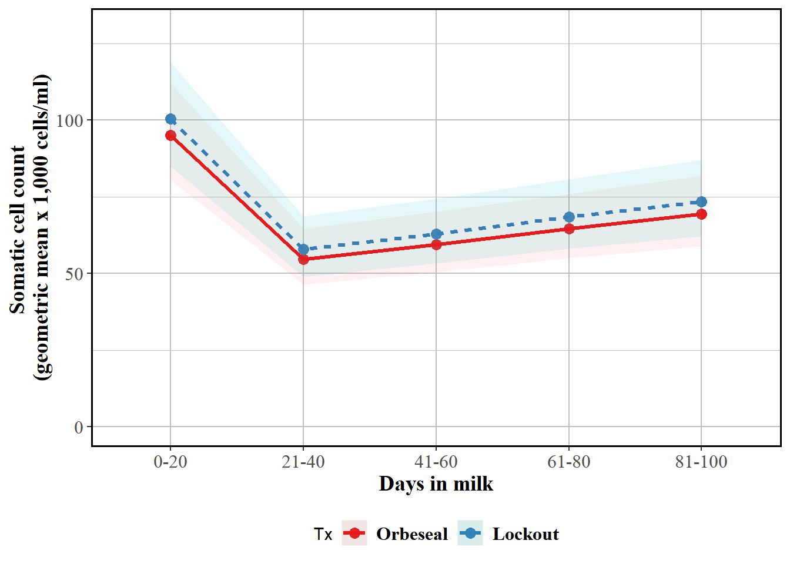
Reported as back-transformed estimated marginal means by herd test day, with interaction with test DIM
mm0 <- lmer(SCC ~ Tx*TestDIMcat20 +Parity + CM1 + PeakSCC + (1|FARMID/Cow), data=lockcowdhi)
atx <- c(10,30,50,70,90,110)
emm <- emmeans(mm0, ~Tx*TestDIMcat20, at=list(atx)) %>% tidy()
emm$SCC <- exp(emm$estimate)
emm$LCL <- exp(emm$conf.low)
emm$UCL <- exp(emm$conf.high)
emm <- emm %>% subset(select=c(Tx,TestDIMcat20,SCC,LCL,UCL))
curve <- ggplot(emm) + coord_cartesian(ylim = (c(0,130))) + aes(x=TestDIMcat20, y=SCC, group=Tx, colour=Tx) +
labs(y = "Somatic cell count \n(geometric mean x 1,000 cells/ml)", x = "Days in milk") + geom_point(size=3) + geom_ribbon(aes(ymin=emm$LCL, ymax=emm$UCL,colour=Tx,fill=Tx), linetype=0, alpha=0.1) + geom_line(aes(colour=Tx,linetype=Tx),size=1.1) + theme(panel.border = element_rect(colour = "black", fill=NA, size=1),axis.text=element_text(size=12,family="Times"),axis.title=element_text(size=14,face="bold",family="Times"),panel.background = element_rect(fill = "white", colour = "white",size = 0.5, linetype = "solid"),panel.grid.major = element_line(size = 0.5, linetype = 'solid', colour = "grey"), panel.grid.minor = element_line(size = 0.25, linetype = 'solid',colour = "grey"),legend.position="bottom",legend.text = element_text(colour="black", size=12,face="bold",family="Times")) + scale_color_brewer(palette="Set1")
curve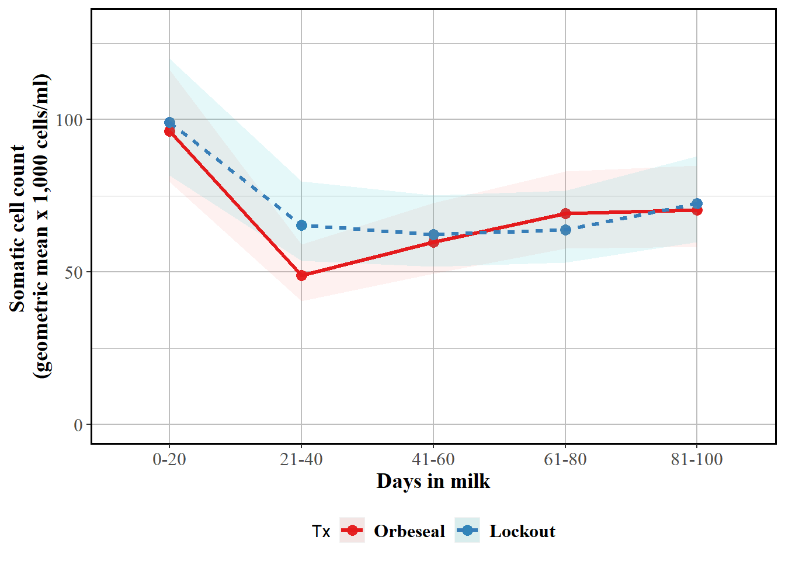
Checking homoskedasticity assumption (variance of residuals)
mm0 <- lmer(SCC ~ Tx*TestDIMcat20 +Parity + CM1 + PeakSCC + (1|FARMID/Cow), data=lockcowdhi)
ggplot(data.frame(eta=predict(mm0,type="link"),pearson=residuals(mm0,type="pearson")),
aes(x=eta,y=pearson)) +
geom_point() +
theme_bw()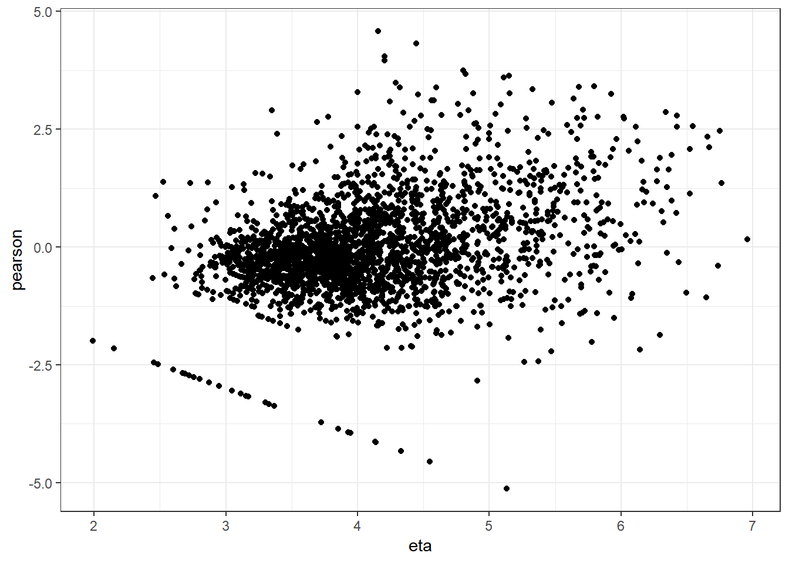
Variance appears to get slightly larger at higher values on the x-axis shown here. But most values are clustered closely in the middle.
Checking normality of residuals
qqnorm(residuals(mm0))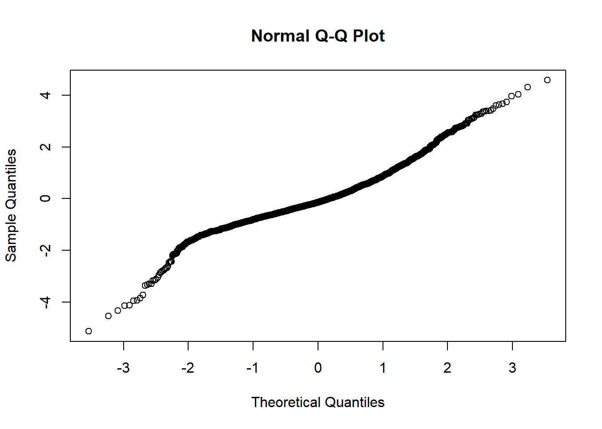
Evidence of small L tail. Although some evidence of heteroskedasticity and not perfectly normal residuals, I believe these are allowable for this model.
Model type: Linear mixed models, random intercepts for farm and cow will be fitted to account for repeated measures within cows, and clustering of cows within herds
Step 1: Identify potential confouders using a directed acyclic graph (DAG)
Step 2: Identify correlated variables using pearson and kendalls correlation coefficients (already done)
Step 3: Create model with all potential confounders
Step 4: Investigate potential effect measure modification
Step 5: Remove unneccesary covariates in backwards stepwise fashion using 10% rule (i.e. if estimated difference in SCC changes by >10% after removing the covariate, the covariate is retained in the model)
Step 6: Report final model
Step 7: Model diagnostics
library(DiagrammeR)
mermaid("graph LR
T(Treatment)-->U(Milk yield)
A(Age)-->T
P(Parity)-->T
M(Yield at dry-off)-->T
S(SCC during prev lactation)-->T
C(CM in prev lact)-->T
D(Days in milk at test)-->U
K(Days in milk at dry off) --> M
C-->K
K-->T
D-->T
A-->U
P-->U
M-->U
S-->U
C-->U
C-->M
P-->C
P-->S
P-->M
A-->P
A-->C
A-->S
A-->M
M-->S
C-->S
style K fill:#FFFFFF, stroke-width:0px
style A fill:#FFFFFF, stroke-width:0px
style T fill:#FFFFFF, stroke-width:2px
style P fill:#FFFFFF, stroke-width:0px
style M fill:#FFFFFF, stroke-width:0px
style S fill:#FFFFFF, stroke-width:0px
style C fill:#FFFFFF, stroke-width:0px
style I fill:#FFFFFF, stroke-width:0px
style D fill:#FFFFFF, stroke-width:0px
style U fill:#FFFFFF, stroke-width:2px
")Parity [“Parity”] <- Age not offered as correlated
Yield at most recent test before dry off [“DOMY”]
Somatic cell count during previous lactation [“DOSCC” and “PeakSCC”]
Days in milk at dry-off [“DIMDO”]
Clinical mastitis in previous lactation [“PrevCM”]
Days in milk at herd test (category, 0-20 “10”, 21-40 “30” etc) [“TestDIMcat20”]
mm0 <- lmer(MY ~ Tx + TestDIMcat20 + Parity + SCCDO + PeakSCC + MYDO + CM1 + DIMDO + (1|FARMID/Cow), data=lockcowdhi)
mm0 %>% tidy
Will investigate EMM with Farm, TestDIMCat and Parity
Tx:FARMID
mm0 <- lmer(MY ~ Tx*FARMID + TestDIMcat20 + Parity + SCCDO + PeakSCC + MYDO + CM1 + DIMDO + (1|Cow), data=lockcowdhi)
car::Anova(mm0) %>% tidyP > 0.05. Will not investigate this further.
Tx:TestDIMCat
mm0 <- lmer(MY ~ Tx*TestDIMcat20 + Parity + SCCDO + PeakSCC + MYDO + CM1 + DIMDO + (1|FARMID/Cow), data=lockcowdhi)
car::Anova(mm0) %>% tidyP > 0.05. Will not investigate this further.
Tx:Parity
mm0 <- lmer(MY ~ Tx*Parity + TestDIMcat20 + SCCDO + PeakSCC + MYDO + CM1 + DIMDO + (1|FARMID/Cow), data=lockcowdhi)
car::Anova(mm0) %>% tidyP > 0.05. Will not investigate this further.
The order for removing covariates will be in increasing likelihood of being a confounder, which is based on my knowledge about the variables and their distribution in treatment groups.
This order will be: DIMDO, CM1, DOSCC, PeakSCC, Parity, DOMY
TestDIMcat20 will not be removed.
Step 5a: Full model
mm0 <- lmer(MY ~ Tx + Parity + TestDIMcat20 + SCCDO + PeakSCC + MYDO + CM1 + DIMDO + (1|FARMID/Cow), data=lockcowdhi)
mm0 %>% tidy(conf.int=T) %>% subset(term=="TxLockout")
Step 5b: Remove DIMDO
mm0 <- lmer(MY ~ Tx + Parity + TestDIMcat20 + SCCDO + PeakSCC + MYDO + CM1 + (1|FARMID/Cow), data=lockcowdhi)
mm0 %>% tidy(conf.int=T) %>% subset(term=="TxLockout")Changed by <10%. Stays out.
Step 5c: Remove CM1
mm0 <- lmer(MY ~ Tx + Parity + TestDIMcat20 + SCCDO + PeakSCC + MYDO + (1|FARMID/Cow), data=lockcowdhi)
mm0 %>% tidy(conf.int=T) %>% subset(term=="TxLockout")Changed by <10%. Stays out.
Step 5d: Remove DOSCC
mm0 <- lmer(MY ~ Tx + Parity + TestDIMcat20 + PeakSCC + MYDO + (1|FARMID/Cow), data=lockcowdhi)
mm0 %>% tidy(conf.int=T) %>% subset(term=="TxLockout")Changed by <10%. Stays out.
Step 5e: Remove PeakSCC
mm0 <- lmer(MY ~ Tx + Parity + TestDIMcat20 + MYDO + (1|FARMID/Cow), data=lockcowdhi)
mm0 %>% tidy(conf.int=T) %>% subset(term=="TxLockout")Changed by <10%. Stays out.
Step 5f: Remove Parity
mm0 <- lmer(MY ~ Tx + TestDIMcat20 + MYDO + (1|FARMID/Cow), data=lockcowdhi)
mm0 %>% tidy(conf.int=T) %>% subset(term=="TxLockout")Changed by <10%. Stays out.
Step 5g: Remove MYDO
mm0 <- lmer(MY ~ Tx + TestDIMcat20 + (1|FARMID/Cow), data=lockcowdhi)
mm0 %>% tidy(conf.int=T) %>% subset(term=="TxLockout")Changed by >10%, MYDO Stays in.
mm0 <- lmer(MY ~ Tx + TestDIMcat20 + MYDO + (1|FARMID/Cow), data=lockcowdhi)
mm0 %>% summary()## Linear mixed model fit by REML ['lmerMod']
## Formula: MY ~ Tx + TestDIMcat20 + MYDO + (1 | FARMID/Cow)
## Data: lockcowdhi
##
## REML criterion at convergence: 17060.2
##
## Scaled residuals:
## Min 1Q Median 3Q Max
## -5.5761 -0.4397 0.0323 0.4787 3.7281
##
## Random effects:
## Groups Name Variance Std.Dev.
## Cow:FARMID (Intercept) 40.13 6.335
## FARMID (Intercept) 74.47 8.630
## Residual 34.74 5.894
## Number of obs: 2479, groups: Cow:FARMID, 802; FARMID, 5
##
## Fixed effects:
## Estimate Std. Error t value
## (Intercept) 28.42539 3.99739 7.111
## TxLockout 0.30493 0.50822 0.600
## TestDIMcat2021-40 11.63950 0.43180 26.956
## TestDIMcat2041-60 12.53594 0.39488 31.746
## TestDIMcat2061-80 12.59149 0.38200 32.962
## TestDIMcat2081-100 9.82467 0.41859 23.471
## MYDO 0.19714 0.03743 5.268
##
## Correlation of Fixed Effects:
## (Intr) TxLckt TDIM202 TDIM204 TDIM206 TDIM208
## TxLockout -0.061
## TDIM2021-40 -0.055 0.009
## TDIM2041-60 -0.050 -0.005 0.489
## TDIM2061-80 -0.051 0.003 0.531 0.505
## TDIM2081-10 -0.053 0.007 0.566 0.508 0.522
## MYDO -0.234 -0.013 0.007 -0.003 -0.006 0.000mm0 %>% tidy(conf.int=T)
mm0 <- lmer(MY ~ 1 + (1|FARMID/Cow), data=lockcowdhi)
summary(mm0)## Linear mixed model fit by REML ['lmerMod']
## Formula: MY ~ 1 + (1 | FARMID/Cow)
## Data: lockcowdhi
##
## REML criterion at convergence: 18137.8
##
## Scaled residuals:
## Min 1Q Median 3Q Max
## -4.1020 -0.4230 0.1139 0.5465 3.3349
##
## Random effects:
## Groups Name Variance Std.Dev.
## Cow:FARMID (Intercept) 34.38 5.863
## FARMID (Intercept) 92.07 9.595
## Residual 63.74 7.984
## Number of obs: 2479, groups: Cow:FARMID, 802; FARMID, 5
##
## Fixed effects:
## Estimate Std. Error t value
## (Intercept) 42.941 4.301 9.985ICC (CowID) = 0.18 ICC (FARMID) = 0.48
A lot of clustering, particularly within farms, which is not suprising given that many milk yield determinants (eg diet) are allocated at the group level.
Mean logSCC
mm0 <- lmer(MY ~ Tx + TestDIMcat20 + MYDO + (1|FARMID/Cow), data=lockcowdhi)
emm <- emmeans(mm0, ~Tx) %>% tidy()
emmVery large confidence intervals, probably because of the huge amount of within herd clustering and between herd variability.
Reported, stratified by TestDIMcat20
mm0 <- lmer(MY ~ Tx + TestDIMcat20 + MYDO + (1|FARMID/Cow), data=lockcowdhi)
atx <- table(lockcowdhi$TestDIMcat20)
emm <- emmeans(mm0, ~Tx*TestDIMcat20, at=list(atx)) %>% tidy()
emm$MY <- emm$estimate
emm <- emm %>% subset(select=c(Tx,TestDIMcat20,MY,conf.low,conf.high))
curve <- ggplot(emm) + coord_cartesian(ylim = (c(0,60))) + aes(x=TestDIMcat20, y=MY, group=Tx, colour=Tx) + geom_point(size=3) + geom_ribbon(aes(ymin=emm$conf.low, ymax=emm$conf.high,colour=Tx,fill=Tx), linetype=0, alpha=0.1) + geom_line(aes(colour=Tx,linetype=Tx),size=1.1) + theme(panel.border = element_rect(colour = "black", fill=NA, size=1),legend.position="bottom",axis.text=element_text(size=12),axis.title=element_text(size=14,face="bold")) +
labs(y = "Average daily milk yield (kg)", x = "Days in milk") + theme(axis.text=element_text(size=12),axis.title=element_text(size=14,face="bold",family="Times"),panel.background = element_rect(fill = "white", colour = "white",size = 0.5, linetype = "solid"),panel.grid.major = element_line(size = 0.5, linetype = 'solid', colour = "grey"), panel.grid.minor = element_line(size = 0.25, linetype = 'solid',colour = "grey"),legend.position="bottom",legend.text = element_text(family="Times", colour="black", size=12,face="bold")) + scale_color_brewer(palette="Set1")
curve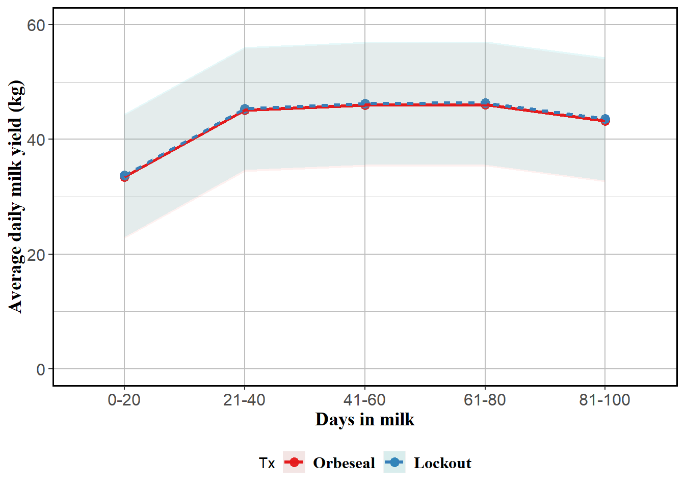
Reported, stratified and modified by TestDIMcat20
mm0 <- lmer(MY ~ Tx*TestDIMcat20 + MYDO + (1|FARMID/Cow), data=lockcowdhi)
summary(mm0)## Linear mixed model fit by REML ['lmerMod']
## Formula: MY ~ Tx * TestDIMcat20 + MYDO + (1 | FARMID/Cow)
## Data: lockcowdhi
##
## REML criterion at convergence: 17054.6
##
## Scaled residuals:
## Min 1Q Median 3Q Max
## -5.5684 -0.4338 0.0289 0.4858 3.7595
##
## Random effects:
## Groups Name Variance Std.Dev.
## Cow:FARMID (Intercept) 40.13 6.335
## FARMID (Intercept) 74.52 8.633
## Residual 34.79 5.898
## Number of obs: 2479, groups: Cow:FARMID, 802; FARMID, 5
##
## Fixed effects:
## Estimate Std. Error t value
## (Intercept) 28.21452 4.00671 7.042
## TxLockout 0.73553 0.72844 1.010
## TestDIMcat2021-40 11.92319 0.60556 19.689
## TestDIMcat2041-60 12.78029 0.57173 22.354
## TestDIMcat2061-80 13.00016 0.54666 23.781
## TestDIMcat2081-100 9.96476 0.59155 16.845
## MYDO 0.19673 0.03744 5.254
## TxLockout:TestDIMcat2021-40 -0.55609 0.86119 -0.646
## TxLockout:TestDIMcat2041-60 -0.47569 0.79073 -0.602
## TxLockout:TestDIMcat2061-80 -0.80013 0.76431 -1.047
## TxLockout:TestDIMcat2081-100 -0.26274 0.83604 -0.314
##
## Correlation of Fixed Effects:
## (Intr) TxLckt TDIM202 TDIM204 TDIM206 TDIM208 MYDO
## TxLockout -0.088
## TDIM2021-40 -0.074 0.417
## TDIM2041-60 -0.071 0.394 0.486
## TDIM2061-80 -0.073 0.415 0.545 0.497
## TDIM2081-10 -0.074 0.416 0.573 0.506 0.532
## MYDO -0.233 -0.019 -0.008 -0.004 -0.011 -0.007
## TL:TDIM2021 0.049 -0.578 -0.700 -0.341 -0.382 -0.401 0.018
## TL:TDIM2041 0.051 -0.558 -0.350 -0.723 -0.359 -0.365 0.004
## TL:TDIM2061 0.052 -0.577 -0.389 -0.355 -0.715 -0.380 0.010
## TL:TDIM2081 0.051 -0.577 -0.403 -0.357 -0.376 -0.706 0.010
## TL:TDIM202 TL:TDIM204 TL:TDIM206
## TxLockout
## TDIM2021-40
## TDIM2041-60
## TDIM2061-80
## TDIM2081-10
## MYDO
## TL:TDIM2021
## TL:TDIM2041 0.488
## TL:TDIM2061 0.530 0.503
## TL:TDIM2081 0.563 0.508 0.522atx <- table(lockcowdhi$TestDIMcat20)
emm <- emmeans(mm0, ~Tx*TestDIMcat20, at=list(atx)) %>% tidy()
emm$MY <- emm$estimate
emm <- emm %>% subset(select=c(Tx,TestDIMcat20,MY,conf.low,conf.high))
curve <- ggplot(emm) + coord_cartesian(ylim = (c(0,60))) + aes(x=TestDIMcat20, y=MY, group=Tx, colour=Tx) + geom_point(size=3) + geom_ribbon(aes(ymin=emm$conf.low, ymax=emm$conf.high,colour=Tx,fill=Tx), linetype=0, alpha=0.1) + geom_line(aes(colour=Tx,linetype=Tx),size=1.1) + theme(panel.border = element_rect(colour = "black", fill=NA, size=1),legend.position="bottom",axis.text=element_text(size=12),axis.title=element_text(size=14,face="bold")) +
labs(y = "Average daily milk yield (kg)", x = "Days in milk") + theme(axis.text=element_text(size=12),axis.title=element_text(size=14,face="bold",family="Times"),panel.background = element_rect(fill = "white", colour = "white",size = 0.5, linetype = "solid"),panel.grid.major = element_line(size = 0.5, linetype = 'solid', colour = "grey"), panel.grid.minor = element_line(size = 0.25, linetype = 'solid',colour = "grey"),legend.position="bottom",legend.text = element_text(family="Times", colour="black", size=12,face="bold")) + scale_color_brewer(palette="Set1")
curve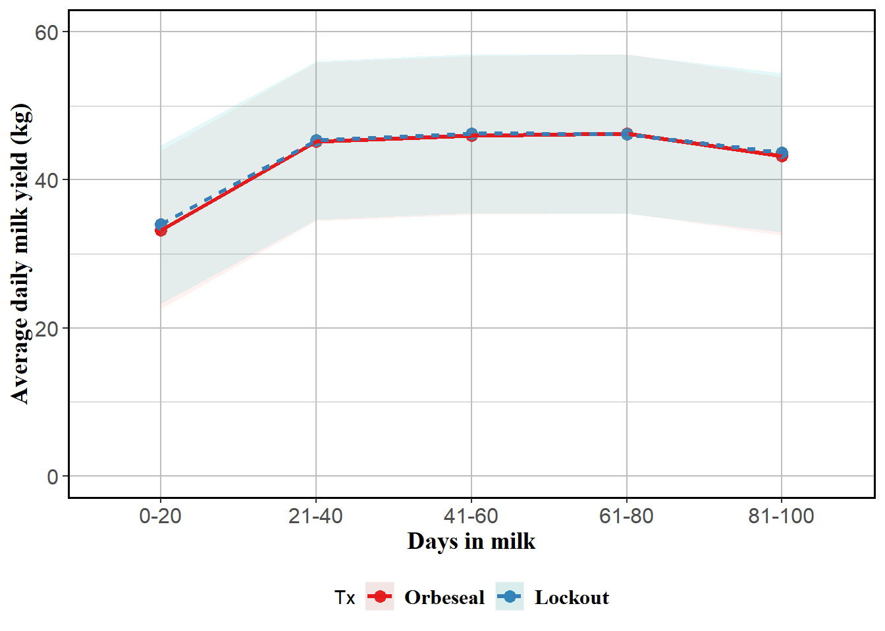
Checking homoskedasticity assumption (variance of residuals)
mm0 <- lmer(MY ~ Tx + TestDIMcat20 + MYDO + (1|FARMID/Cow), data=lockcowdhi)
ggplot(data.frame(eta=predict(mm0,type="link"),pearson=residuals(mm0,type="pearson")),
aes(x=eta,y=pearson)) +
geom_point() +
theme_bw()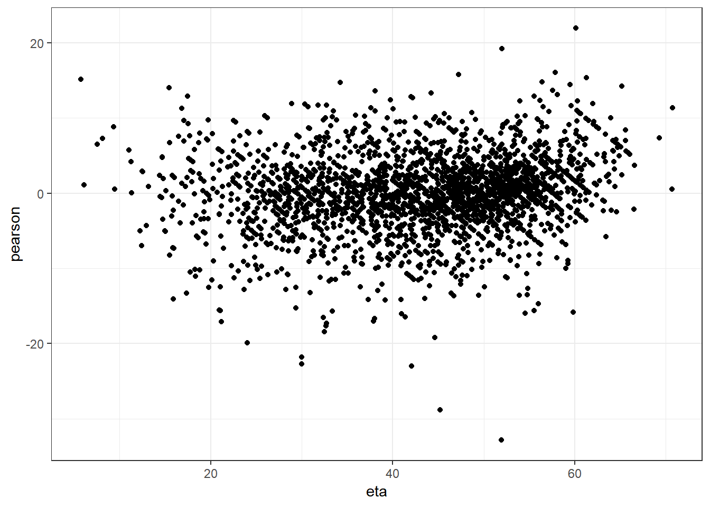
Vey little evidence of heteroskedasticity
Checking normality of residuals
qqnorm(residuals(mm0))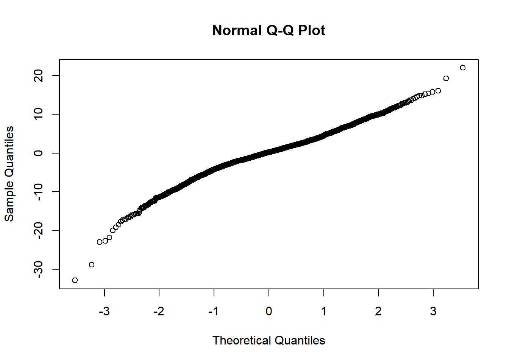
I am happy with homoskedasticity and normal residuals assumptions